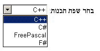

The default style sheet and general rendering advice for HTML.
This specification is an experimental breakup of the HTML specification. You can see the full list on the index page and take part in the discussion in the repository.
In general, user agents are expected to support CSS, and many of the suggestions in this section are expressed in CSS terms. User agents that use other presentation mechanisms can derive their expected behaviour by translating from the CSS rules given in this section.
In the absence of style-layer rules to the contrary (e.g. author style sheets), user agents are expected to render an element so that it conveys to the user the meaning that the element represents, as described by this specification.
The suggestions in this section generally assume a visual output medium with a resolution of 96dpi or greater, but HTML is intended to apply to multiple media (it is a media-independent language). User agent implementors are encouraged to adapt the suggestions in this section to their target media.
An element is being rendered if it has any associated CSS layout boxes, SVG layout boxes, or some equivalent in other styling languages.
Just being off-screen does not mean the element is not being rendered. The presence of the attribute normally means the element is not being rendered, though this might be overridden by the style sheets.
User agents that do not honor author-level CSS style sheets are nonetheless expected to act as if they applied the CSS rules given in these sections in a manner consistent with this specification and the relevant CSS and Unicode specifications. [[!CSS]] [[!UNICODE]] [[!BIDI]]
This is especially important for issues relating to the 'display', 'unicode-bidi', and 'direction' properties.
The CSS rules given in these subsections are, except where otherwise specified, expected to be used as part of the user-agent level style sheet defaults for all documents that contain HTML elements.
Some rules are intended for the author-level zero-specificity presentational hints part of the CSS cascade; these are explicitly called out as presentational hints.
Some of the rules regarding left and right margins are given here as appropriate for elements whose 'direction' property is 'ltr', and are expected to be flipped around on elements whose 'direction' property is 'rtl'. These are marked "LTR-specific".
These markings only affect the handling of attribute values, not attribute names or element names.
When the text below says that an attribute attribute on an element element maps to the pixel length property (or properties) properties, it means that if element has an attribute attribute set, and parsing that attribute's value using the rules for parsing non-negative integers doesn't generate an error, then the user agent is expected to use the parsed value as a pixel length for a presentational hint for properties.
When the text below says that an attribute attribute on an element element maps to the dimension property (or properties) properties, it means that if element has an attribute attribute set, and parsing that attribute's value using the rules for parsing dimension values doesn't generate an error, then the user agent is expected to use the parsed dimension as the value for a presentational hint for properties, with the value given as a pixel length if the dimension was an integer, and with the value given as a percentage if the dimension was a percentage.
When a user agent is to align descendants of a node, the user agent is expected to
align only those descendants that have both their 'margin-left' and 'margin-right' properties
computing to a value other than 'auto', that are over-constrained and that have one of those two
margins with a used value forced to a greater value, and that do not themselves have an applicable
align attribute. When multiple elements are to align a particular descendant, the most deeply nested such
element is expected to override the others. Aligned elements are expected to be aligned by having
the used values of their left and right margins be set accordingly.
@namespace url(http://www.w3.org/1999/xhtml);
, area, base, basefont, datalist, head, link, menu[type=popup i], meta,
noembed, noframes, param, rp, script, source, style, template, track, title {
display: none;
}
embed[hidden] { display: inline; height: 0; width: 0; }
input[type=hidden i] { display none ! important; }
The user agent is expected to force the 'display' property of elements for whom to compute to 'none', irrespective of CSS rules.
@namespace url(http://www.w3.org/1999/xhtml);
html, body { display: block; }
For each property in the table below, given a body element, the first attribute
that exists maps to the pixel length property on the body element. If
none of the attributes for a property are found, or if the value of the attribute that was found
cannot be parsed successfully, then, if the body element's node document's
browsing context does not have its seamless browsing context flag set, a
default value of 8px is expected to be used for that property instead.
| Property | Source |
|---|---|
| 'margin-top' | body element's marginheight attribute
|
The body element's container frame element's marginheight attribute
| |
body element's topmargin attribute
| |
| 'margin-right' | body element's marginwidth attribute
|
The body element's container frame element's marginwidth attribute
| |
body element's rightmargin attribute
| |
| 'margin-bottom' | body element's marginheight attribute
|
The body element's container frame element's marginheight attribute
| |
body element's bottommargin attribute
| |
| 'margin-left' | body element's marginwidth attribute
|
The body element's container frame element's marginwidth attribute
| |
body element's leftmargin attribute
|
If the body element's node document's browsing context is a
nested browsing context, and the browsing context container of that
nested browsing context is a frame or iframe element, then
the container frame element of the body element is that frame
or iframe element. Otherwise, there is no container frame element.
The above requirements imply that a page can change the margins of another page
(including one from another origin) using, for example, an iframe. This
is potentially a security risk, as it might in some cases allow an attack to contrive a situation
in which a page is rendered not as the author intended, possibly for the purposes of phishing or
otherwise misleading the user.
If a Document is in a nested browsing context, it is expected to be
positioned and sized to fit inside the content box of its browsing context container.
If a browsing context is not being rendered, it is expected to have a
viewport with zero width and zero height.
If the Document is in a nested browsing context, and the
browsing context container of that nested browsing context is a
frame or iframe element, and that element has a scrolling attribute, and that attribute's value is an ASCII
case-insensitive match for the string "off", "noscroll", or "no", then the user agent is expected to
prevent any scroll bars from being shown for the viewport of the nested browsing
context, regardless of the 'overflow' property that applies to that viewport.
When a body element has a background
attribute set to a non-empty value, the new value is expected to be resolved relative to the element, and if this is successful, the user agent is
expected to treat the attribute as a presentational hint
setting the element's 'background-image' property to the resulting absolute URL.
When a body element has a bgcolor attribute
set, the new value is expected to be parsed using the rules for parsing a legacy colour
value, and if that does not return an error, the user agent is expected to treat the
attribute as a presentational hint setting the element's
'background-color' property to the resulting colour.
When a body element has a text attribute, its
value is expected to be parsed using the rules for parsing a legacy colour value, and
if that does not return an error, the user agent is expected to treat the attribute as a presentational hint setting the element's 'color' property to
the resulting colour.
When a body element has a link attribute, its
value is expected to be parsed using the rules for parsing a legacy colour value, and
if that does not return an error, the user agent is expected to treat the attribute as a presentational hint setting the 'color' property of any
element in the Document matching the ':link' pseudo-class to the resulting colour.
When a body element has a vlink attribute,
its value is expected to be parsed using the rules for parsing a legacy colour value,
and if that does not return an error, the user agent is expected to treat the attribute as a presentational hint setting the 'color' property of any
element in the Document matching the ':visited' pseudo-class to the resulting
colour.
When a body element has an alink attribute,
its value is expected to be parsed using the rules for parsing a legacy colour value,
and if that does not return an error, the user agent is expected to treat the attribute as a presentational hint setting the 'color' property of any
element in the Document matching the ':active' pseudo-class and either the ':link'
pseudo-class or the ':visited' pseudo-class to the resulting colour.
@namespace url(http://www.w3.org/1999/xhtml);
address, blockquote, center, div, figure, figcaption, footer, form, header, hr,
legend, listing, main, p, plaintext, pre, summary, xmp {
display: block;
}
blockquote, figure, listing, p, plaintext, pre, xmp {
margin-top: 1em; margin-bottom: 1em;
}
blockquote, figure { margin-left: 40px; margin-right: 40px; }
address { font-style: italic; }
listing, plaintext, pre, xmp {
font-family: monospace; white-space: pre;
}
dialog:not([open]) { display: none; }
dialog {
position: absolute;
left: 0; right: 0;
width: fit-content;
height: fit-content;
margin: auto;
border: solid;
padding: 1em;
background: white;
color: black;
}
dialog::backdrop {
position: fixed;
top: 0; right: 0; bottom: 0; left: 0;
background: rgba(0,0,0,0.1);
}
/* for small devices, modal dialogs go full-screen */
@media screen and (max-width: 540px) {
dialog:modal {
top: 0;
width: auto;
margin: 1em;
}
}
The following rules are also expected to apply, as presentational hints:
@namespace url(http://www.w3.org/1999/xhtml);
pre[wrap] { white-space: pre-wrap; }
In quirks mode, the following rules are also expected to apply:
@namespace url(http://www.w3.org/1999/xhtml);
form { margin-bottom: 1em; }
The center element, and the div element when it has an align attribute whose value is an ASCII
case-insensitive match for either the string "center" or the string
"middle", are expected to center text within themselves, as if they had
their 'text-align' property set to 'center' in a presentational hint, and to align descendants to the center.
The div element, when it has an align
attribute whose value is an ASCII case-insensitive match for the string "left", is expected to left-align text within itself, as if it had its
'text-align' property set to 'left' in a presentational
hint, and to align descendants to the left.
The div element, when it has an align
attribute whose value is an ASCII case-insensitive match for the string "right", is expected to right-align text within itself, as if it had its
'text-align' property set to 'right' in a presentational
hint, and to align descendants to the right.
The div element, when it has an align
attribute whose value is an ASCII case-insensitive match for the string "justify", is expected to full-justify text within itself, as if it had its
'text-align' property set to 'justify' in a presentational
hint, and to align descendants to the left.
@namespace url(http://www.w3.org/1999/xhtml);
cite, dfn, em, i, var { font-style: italic; }
b, strong { font-weight: bolder; }
code, kbd, samp, tt { font-family: monospace; }
big { font-size: larger; }
small { font-size: smaller; }
sub { vertical-align: sub; }
sup { vertical-align: super; }
sub, sup { line-height: normal; font-size: smaller; }
ruby { display: ruby; }
rb { display: ruby-base; white-space: nowrap; }
rt {
display: ruby-text;
white-space: nowrap;
font-size: 50%;
font-variant-east-asian: ruby;
text-emphasis: none;
}
rbc { display: ruby-base-container; }
rtc { display: ruby-text-container; }
ruby, rb, rt, rbc, rtc { unicode-bidi: isolate; }
:link { color: #0000EE; }
:visited { color: #551A8B; }
:link:active, :visited:active { color: #FF0000; }
:link, :visited { text-decoration: underline; cursor: pointer; }
a:link[rel~=help], a:visited[rel~=help],
area:link[rel~=help], area:visited[rel~=help] { cursor: help; }
:focus { outline: auto; }
mark { background: yellow; color: black; } /* this colour is just a suggestion and can be changed based on implementation feedback */
abbr[title], acronym[title] { text-decoration: dotted underline; }
ins, u { text-decoration: underline; }
del, s, strike { text-decoration: line-through; }
blink { text-decoration: blink; }
q::before { content: open-quote; }
q::after { content: close-quote; }
br { display-outside: newline; } /* this also has bidi implications */
nobr { white-space: nowrap; }
wbr { display-outside: break-opportunity; } /* this also has bidi implications */
nobr wbr { white-space: normal; }
The following rules are also expected to apply, as presentational hints:
@namespace url(http://www.w3.org/1999/xhtml);
br[clear=left i] { clear: left; }
br[clear=right i] { clear: right; }
br[clear=all i], br[clear=both i] { clear: both; }
For the purposes of the CSS ruby model, runs of children of ruby elements that are
not rt or rp elements are expected to be wrapped in anonymous boxes
whose 'display' property has the value 'ruby-base'. [[!CSSRUBY]]
When a particular part of a ruby has more than one annotation, the annotations should be distributed on both sides of the base text so as to minimise the stacking of ruby annotations on one side.
When it becomes possible to do so, the preceding requirement will be updated to be
expressed in terms of CSS ruby. (Currently, CSS ruby does not handle nested ruby
elements or multiple sequential rt elements, which is how this semantic is
expressed.)
User agents that do not support correct ruby rendering are expected to render parentheses
around the text of rt elements in the absence of rp elements.
User agents are expected to support the 'clear' property on inline elements (in order to render
br elements with clear attributes) in the manner
described in the non-normative note to this effect in CSS2.1.
The initial value for the 'color' property is expected to be black. The initial value for the 'background-color' property is expected to be 'transparent'. The canvas' background is expected to be white.
When a font element has a color
attribute, its value is expected to be parsed using the rules for parsing a legacy colour
value, and if that does not return an error, the user agent is expected to treat the
attribute as a presentational hint setting the
element's 'color' property to the resulting colour.
When a font element has a face
attribute, the user agent is expected to treat the attribute as a presentational hint setting the element's 'font-family' property to the attribute's
value.
When a font element has a size
attribute, the user agent is expected to use the following steps, known as the rules for
parsing a legacy font size, to treat the attribute as a presentational hint setting the element's 'font-size' property:
Let input be the attribute's value.
Let position be a pointer into input, initially pointing at the start of the string.
If position is past the end of input, there is no presentational hint. Abort these steps.
If the character at position is a U+002B PLUS SIGN character (+), then let mode be relative-plus, and advance position to the next character. Otherwise, if the character at position is a U+002D HYPHEN-MINUS character (-), then let mode be relative-minus, and advance position to the next character. Otherwise, let mode be absolute.
Collect a sequence of characters that are ASCII digits, and let the resulting sequence be digits.
If digits is the empty string, there is no presentational hint. Abort these steps.
Interpret digits as a base-ten integer. Let value be the resulting number.
If mode is relative-plus, then increment value by 3. If mode is relative-minus, then let value be the result of subtracting value from 3.
If value is greater than 7, let it be 7.
If value is less than 1, let it be 1.
Set 'font-size' to the keyword corresponding to the value of value according to the following table:
| value | 'font-size' keyword | Notes |
|---|---|---|
| 1 | x-small | |
| 2 | small | |
| 3 | medium | |
| 4 | large | |
| 5 | x-large | |
| 6 | xx-large | |
| 7 | xxx-large | see below |
The 'xxx-large' value is a non-CSS value used here to indicate a font size 50% larger than 'xx-large'.
@namespace url(http://www.w3.org/1999/xhtml);
[dir]:dir(ltr), bdi:dir(ltr), input[type=tel]:dir(ltr) { direction: ltr; }
[dir]:dir(rtl), bdi:dir(rtl) { direction: rtl; }
address, blockquote, center, div, figure, figcaption, footer, form, header, hr,
legend, listing, main, p, plaintext, pre, summary, xmp, article, aside, h1, h2,
h3, h4, h5, h6, hgroup, nav, section, table, caption, colgroup, col, thead,
tbody, tfoot, tr, td, th, dir, dd, dl, dt, menu, ol, ul, li, bdi, output,
[dir=ltr i], [dir=rtl i], [dir=auto i] {
unicode-bidi: isolate;
}
bdo, bdo[dir] { unicode-bidi: isolate-override; }
textarea[dir=auto i], input[type=text][dir=auto i], input[type=search][dir=auto i],
input[type=tel][dir=auto i], input[type=url][dir=auto i], input[type=email][dir=auto i],
pre[dir=auto i] { unicode-bidi: plaintext; }
/* the rules setting the 'content' property on br and wbr elements also has bidi implications */
Input fields (i.e. textarea elements, and input elements when their
type attribute is in the Text, Search,
Telephone, URL,
or E-mail state) are expected to present an editing
user interface with a directionality that matches the element's 'direction' property.
When the document's character encoding is ISO-8859-8, the following rules are additionally expected to apply, following those above: [[!ENCODING]]
@namespace url(http://www.w3.org/1999/xhtml);
address, blockquote, center, div, figure, figcaption, footer, form, header, hr,
legend, listing, main, p, plaintext, pre, summary, xmp, article, aside, h1, h2,
h3, h4, h5, h6, hgroup, nav, section, table, caption, colgroup, col, thead,
tbody, tfoot, tr, td, th, dir, dd, dl, dt, menu, ol, ul, li, [dir=ltr i],
[dir=rtl i], [dir=auto i], *|* {
unicode-bidi: bidi-override;
}
input:not([type=submit i]):not([type=reset i]):not([type=button i]),
textarea, keygen {
unicode-bidi: normal;
}This block is automatically generated from the Unicode Common Locale Data Repository. [[!CLDR]]
User agents are expected to use either the block below (which will be regularly updated) or to
automatically generate their own copy directly from the source material. The language codes are
derived from the CLDR file names. The quotes are derived from the delimiter
blocks, with fallback handled as specified in the CLDR documentation.
@namespace url(http://www.w3.org/1999/xhtml);
:root { quotes: '\201c' '\201d' '\2018' '\2019' } /* “ ” ‘ ’ */
:root:lang(af), :not(:lang(af)) > :lang(af) { quotes: '\201c' '\201d' '\2018' '\2019' } /* “ ” ‘ ’ */
:root:lang(agq), :not(:lang(agq)) > :lang(agq) { quotes: '\201e' '\201d' '\201a' '\2019' } /* „ ” ‚ ’ */
:root:lang(ak), :not(:lang(ak)) > :lang(ak) { quotes: '\201c' '\201d' '\2018' '\2019' } /* “ ” ‘ ’ */
:root:lang(am), :not(:lang(am)) > :lang(am) { quotes: '\00ab' '\00bb' '\2039' '\203a' } /* « » ‹ › */
:root:lang(ar), :not(:lang(ar)) > :lang(ar) { quotes: '\201d' '\201c' '\2019' '\2018' } /* ” “ ’ ‘ */
:root:lang(asa), :not(:lang(asa)) > :lang(asa) { quotes: '\201c' '\201d' '\2018' '\2019' } /* “ ” ‘ ’ */
:root:lang(ast), :not(:lang(ast)) > :lang(ast) { quotes: '\00ab' '\00bb' '\201c' '\201d' } /* « » “ ” */
:root:lang(az), :not(:lang(az)) > :lang(az) { quotes: '\201c' '\201d' '\2018' '\2019' } /* “ ” ‘ ’ */
:root:lang(az-Cyrl), :not(:lang(az-Cyrl)) > :lang(az-Cyrl) { quotes: '\00ab' '\00bb' '\2039' '\203a' } /* « » ‹ › */
:root:lang(bas), :not(:lang(bas)) > :lang(bas) { quotes: '\00ab' '\00bb' '\201e' '\201c' } /* « » „ “ */
:root:lang(bem), :not(:lang(bem)) > :lang(bem) { quotes: '\201c' '\201d' '\2018' '\2019' } /* “ ” ‘ ’ */
:root:lang(bez), :not(:lang(bez)) > :lang(bez) { quotes: '\201c' '\201d' '\2018' '\2019' } /* “ ” ‘ ’ */
:root:lang(bg), :not(:lang(bg)) > :lang(bg) { quotes: '\201e' '\201c' '\201e' '\201c' } /* „ “ „ “ */
:root:lang(bm), :not(:lang(bm)) > :lang(bm) { quotes: '\00ab' '\00bb' '\201c' '\201d' } /* « » “ ” */
:root:lang(bn), :not(:lang(bn)) > :lang(bn) { quotes: '\201c' '\201d' '\2018' '\2019' } /* “ ” ‘ ’ */
:root:lang(br), :not(:lang(br)) > :lang(br) { quotes: '\00ab' '\00bb' '\2039' '\203a' } /* « » ‹ › */
:root:lang(brx), :not(:lang(brx)) > :lang(brx) { quotes: '\201c' '\201d' '\2018' '\2019' } /* “ ” ‘ ’ */
:root:lang(bs), :not(:lang(bs)) > :lang(bs) { quotes: '\201e' '\201c' '\2018' '\2019' } /* „ “ ‘ ’ */
:root:lang(bs-Cyrl), :not(:lang(bs-Cyrl)) > :lang(bs-Cyrl) { quotes: '\201e' '\201c' '\201a' '\2018' } /* „ “ ‚ ‘ */
:root:lang(ca), :not(:lang(ca)) > :lang(ca) { quotes: '\00ab' '\00bb' '\201c' '\201d' } /* « » “ ” */
:root:lang(cgg), :not(:lang(cgg)) > :lang(cgg) { quotes: '\201c' '\201d' '\2018' '\2019' } /* “ ” ‘ ’ */
:root:lang(chr), :not(:lang(chr)) > :lang(chr) { quotes: '\201c' '\201d' '\2018' '\2019' } /* “ ” ‘ ’ */
:root:lang(cs), :not(:lang(cs)) > :lang(cs) { quotes: '\201e' '\201c' '\201a' '\2018' } /* „ “ ‚ ‘ */
:root:lang(cy), :not(:lang(cy)) > :lang(cy) { quotes: '\2018' '\2019' '\201c' '\201d' } /* ‘ ’ “ ” */
:root:lang(da), :not(:lang(da)) > :lang(da) { quotes: '\201c' '\201d' '\2018' '\2019' } /* “ ” ‘ ’ */
:root:lang(dav), :not(:lang(dav)) > :lang(dav) { quotes: '\201c' '\201d' '\2018' '\2019' } /* “ ” ‘ ’ */
:root:lang(de), :not(:lang(de)) > :lang(de) { quotes: '\201e' '\201c' '\201a' '\2018' } /* „ “ ‚ ‘ */
:root:lang(dje), :not(:lang(dje)) > :lang(dje) { quotes: '\201c' '\201d' '\2018' '\2019' } /* “ ” ‘ ’ */
:root:lang(dsb), :not(:lang(dsb)) > :lang(dsb) { quotes: '\201e' '\201c' '\201a' '\2018' } /* „ “ ‚ ‘ */
:root:lang(dua), :not(:lang(dua)) > :lang(dua) { quotes: '\00ab' '\00bb' '\2018' '\2019' } /* « » ‘ ’ */
:root:lang(dyo), :not(:lang(dyo)) > :lang(dyo) { quotes: '\00ab' '\00bb' '\201c' '\201d' } /* « » “ ” */
:root:lang(dz), :not(:lang(dz)) > :lang(dz) { quotes: '\201c' '\201d' '\2018' '\2019' } /* “ ” ‘ ’ */
:root:lang(ebu), :not(:lang(ebu)) > :lang(ebu) { quotes: '\201c' '\201d' '\2018' '\2019' } /* “ ” ‘ ’ */
:root:lang(ee), :not(:lang(ee)) > :lang(ee) { quotes: '\201c' '\201d' '\2018' '\2019' } /* “ ” ‘ ’ */
:root:lang(el), :not(:lang(el)) > :lang(el) { quotes: '\00ab' '\00bb' '\0022' '\0022' } /* « » " " */
:root:lang(en), :not(:lang(en)) > :lang(en) { quotes: '\201c' '\201d' '\2018' '\2019' } /* “ ” ‘ ’ */
:root:lang(es), :not(:lang(es)) > :lang(es) { quotes: '\00ab' '\00bb' '\201c' '\201d' } /* « » “ ” */
:root:lang(et), :not(:lang(et)) > :lang(et) { quotes: '\201e' '\201c' '\201a' '\2018' } /* „ “ ‚ ‘ */
:root:lang(eu), :not(:lang(eu)) > :lang(eu) { quotes: '\0022' '\0022' '\0022' '\0022' } /* " " " " */
:root:lang(ewo), :not(:lang(ewo)) > :lang(ewo) { quotes: '\00ab' '\00bb' '\201c' '\201d' } /* « » “ ” */
:root:lang(fa), :not(:lang(fa)) > :lang(fa) { quotes: '\00ab' '\00bb' '\2039' '\203a' } /* « » ‹ › */
:root:lang(ff), :not(:lang(ff)) > :lang(ff) { quotes: '\201e' '\201d' '\201a' '\2019' } /* „ ” ‚ ’ */
:root:lang(fi), :not(:lang(fi)) > :lang(fi) { quotes: '\201d' '\201d' '\2019' '\2019' } /* ” ” ’ ’ */
:root:lang(fil), :not(:lang(fil)) > :lang(fil) { quotes: '\201c' '\201d' '\2018' '\2019' } /* “ ” ‘ ’ */
:root:lang(fr), :not(:lang(fr)) > :lang(fr) { quotes: '\00ab' '\00bb' '\00ab' '\00bb' } /* « » « » */
:root:lang(fr-CH), :not(:lang(fr-CH)) > :lang(fr-CH) { quotes: '\00ab' '\00bb' '\2039' '\203a' } /* « » ‹ › */
:root:lang(ga), :not(:lang(ga)) > :lang(ga) { quotes: '\201c' '\201d' '\2018' '\2019' } /* “ ” ‘ ’ */
:root:lang(gd), :not(:lang(gd)) > :lang(gd) { quotes: '\201c' '\201d' '\2018' '\2019' } /* “ ” ‘ ’ */
:root:lang(gl), :not(:lang(gl)) > :lang(gl) { quotes: '\201c' '\201d' '\2018' '\2019' } /* “ ” ‘ ’ */
:root:lang(gsw), :not(:lang(gsw)) > :lang(gsw) { quotes: '\00ab' '\00bb' '\2039' '\203a' } /* « » ‹ › */
:root:lang(gu), :not(:lang(gu)) > :lang(gu) { quotes: '\201c' '\201d' '\2018' '\2019' } /* “ ” ‘ ’ */
:root:lang(guz), :not(:lang(guz)) > :lang(guz) { quotes: '\201c' '\201d' '\2018' '\2019' } /* “ ” ‘ ’ */
:root:lang(ha), :not(:lang(ha)) > :lang(ha) { quotes: '\201c' '\201d' '\2018' '\2019' } /* “ ” ‘ ’ */
:root:lang(he), :not(:lang(he)) > :lang(he) { quotes: '\05f4' '\05f4' '\05f3' '\05f3' } /* ״ ״ ׳ ׳ */
:root:lang(hi), :not(:lang(hi)) > :lang(hi) { quotes: '\201c' '\201d' '\2018' '\2019' } /* “ ” ‘ ’ */
:root:lang(hr), :not(:lang(hr)) > :lang(hr) { quotes: '\201e' '\201c' '\201a' '\2018' } /* „ “ ‚ ‘ */
:root:lang(hsb), :not(:lang(hsb)) > :lang(hsb) { quotes: '\201e' '\201c' '\201a' '\2018' } /* „ “ ‚ ‘ */
:root:lang(hu), :not(:lang(hu)) > :lang(hu) { quotes: '\201e' '\201d' '\00bb' '\00ab' } /* „ ” » « */
:root:lang(hy), :not(:lang(hy)) > :lang(hy) { quotes: '\00ab' '\00bb' '\00ab' '\00bb' } /* « » « » */
:root:lang(id), :not(:lang(id)) > :lang(id) { quotes: '\201c' '\201d' '\2018' '\2019' } /* “ ” ‘ ’ */
:root:lang(ig), :not(:lang(ig)) > :lang(ig) { quotes: '\201c' '\201d' '\2018' '\2019' } /* “ ” ‘ ’ */
:root:lang(is), :not(:lang(is)) > :lang(is) { quotes: '\201e' '\201c' '\201a' '\2018' } /* „ “ ‚ ‘ */
:root:lang(it), :not(:lang(it)) > :lang(it) { quotes: '\00ab' '\00bb' '\201c' '\201d' } /* « » “ ” */
:root:lang(ja), :not(:lang(ja)) > :lang(ja) { quotes: '\300c' '\300d' '\300e' '\300f' } /* 「 」 『 』 */
:root:lang(jgo), :not(:lang(jgo)) > :lang(jgo) { quotes: '\00ab' '\00bb' '\2039' '\203a' } /* « » ‹ › */
:root:lang(jmc), :not(:lang(jmc)) > :lang(jmc) { quotes: '\201c' '\201d' '\2018' '\2019' } /* “ ” ‘ ’ */
:root:lang(ka), :not(:lang(ka)) > :lang(ka) { quotes: '\201e' '\201c' '\00ab' '\00bb' } /* „ “ « » */
:root:lang(kab), :not(:lang(kab)) > :lang(kab) { quotes: '\00ab' '\00bb' '\201c' '\201d' } /* « » “ ” */
:root:lang(kam), :not(:lang(kam)) > :lang(kam) { quotes: '\201c' '\201d' '\2018' '\2019' } /* “ ” ‘ ’ */
:root:lang(kde), :not(:lang(kde)) > :lang(kde) { quotes: '\201c' '\201d' '\2018' '\2019' } /* “ ” ‘ ’ */
:root:lang(kea), :not(:lang(kea)) > :lang(kea) { quotes: '\201c' '\201d' '\2018' '\2019' } /* “ ” ‘ ’ */
:root:lang(khq), :not(:lang(khq)) > :lang(khq) { quotes: '\201c' '\201d' '\2018' '\2019' } /* “ ” ‘ ’ */
:root:lang(ki), :not(:lang(ki)) > :lang(ki) { quotes: '\201c' '\201d' '\2018' '\2019' } /* “ ” ‘ ’ */
:root:lang(kk), :not(:lang(kk)) > :lang(kk) { quotes: '\201c' '\0022' '\2018' '\2019' } /* “ " ‘ ’ */
:root:lang(kkj), :not(:lang(kkj)) > :lang(kkj) { quotes: '\00ab' '\00bb' '\2039' '\203a' } /* « » ‹ › */
:root:lang(kln), :not(:lang(kln)) > :lang(kln) { quotes: '\201c' '\201d' '\2018' '\2019' } /* “ ” ‘ ’ */
:root:lang(km), :not(:lang(km)) > :lang(km) { quotes: '\201c' '\201d' '\2018' '\2019' } /* “ ” ‘ ’ */
:root:lang(kn), :not(:lang(kn)) > :lang(kn) { quotes: '\201c' '\201d' '\2018' '\2019' } /* “ ” ‘ ’ */
:root:lang(ko), :not(:lang(ko)) > :lang(ko) { quotes: '\201c' '\201d' '\2018' '\2019' } /* “ ” ‘ ’ */
:root:lang(ksb), :not(:lang(ksb)) > :lang(ksb) { quotes: '\201c' '\201d' '\2018' '\2019' } /* “ ” ‘ ’ */
:root:lang(ksf), :not(:lang(ksf)) > :lang(ksf) { quotes: '\00ab' '\00bb' '\2018' '\2019' } /* « » ‘ ’ */
:root:lang(ky), :not(:lang(ky)) > :lang(ky) { quotes: '\00ab' '\00bb' '\201e' '\201c' } /* « » „ “ */
:root:lang(lag), :not(:lang(lag)) > :lang(lag) { quotes: '\201d' '\201d' '\2019' '\2019' } /* ” ” ’ ’ */
:root:lang(lb), :not(:lang(lb)) > :lang(lb) { quotes: '\201e' '\201c' '\201a' '\2018' } /* „ “ ‚ ‘ */
:root:lang(lg), :not(:lang(lg)) > :lang(lg) { quotes: '\201c' '\201d' '\2018' '\2019' } /* “ ” ‘ ’ */
:root:lang(ln), :not(:lang(ln)) > :lang(ln) { quotes: '\201c' '\201d' '\2018' '\2019' } /* “ ” ‘ ’ */
:root:lang(lo), :not(:lang(lo)) > :lang(lo) { quotes: '\201c' '\201d' '\2018' '\2019' } /* “ ” ‘ ’ */
:root:lang(lt), :not(:lang(lt)) > :lang(lt) { quotes: '\201e' '\201c' '\201e' '\201c' } /* „ “ „ “ */
:root:lang(lu), :not(:lang(lu)) > :lang(lu) { quotes: '\201c' '\201d' '\2018' '\2019' } /* “ ” ‘ ’ */
:root:lang(luo), :not(:lang(luo)) > :lang(luo) { quotes: '\201c' '\201d' '\2018' '\2019' } /* “ ” ‘ ’ */
:root:lang(luy), :not(:lang(luy)) > :lang(luy) { quotes: '\201e' '\201c' '\201a' '\2018' } /* „ “ ‚ ‘ */
:root:lang(lv), :not(:lang(lv)) > :lang(lv) { quotes: '\201c' '\201d' '\2018' '\2019' } /* “ ” ‘ ’ */
:root:lang(mas), :not(:lang(mas)) > :lang(mas) { quotes: '\201c' '\201d' '\2018' '\2019' } /* “ ” ‘ ’ */
:root:lang(mer), :not(:lang(mer)) > :lang(mer) { quotes: '\201c' '\201d' '\2018' '\2019' } /* “ ” ‘ ’ */
:root:lang(mfe), :not(:lang(mfe)) > :lang(mfe) { quotes: '\201c' '\201d' '\2018' '\2019' } /* “ ” ‘ ’ */
:root:lang(mg), :not(:lang(mg)) > :lang(mg) { quotes: '\00ab' '\00bb' '\201c' '\201d' } /* « » “ ” */
:root:lang(mgo), :not(:lang(mgo)) > :lang(mgo) { quotes: '\201c' '\201d' '\2018' '\2019' } /* “ ” ‘ ’ */
:root:lang(mk), :not(:lang(mk)) > :lang(mk) { quotes: '\201e' '\201c' '\201a' '\2018' } /* „ “ ‚ ‘ */
:root:lang(ml), :not(:lang(ml)) > :lang(ml) { quotes: '\201c' '\201d' '\2018' '\2019' } /* “ ” ‘ ’ */
:root:lang(mn), :not(:lang(mn)) > :lang(mn) { quotes: '\201c' '\201d' '\2018' '\2019' } /* “ ” ‘ ’ */
:root:lang(mr), :not(:lang(mr)) > :lang(mr) { quotes: '\201c' '\201d' '\2018' '\2019' } /* “ ” ‘ ’ */
:root:lang(ms), :not(:lang(ms)) > :lang(ms) { quotes: '\201c' '\201d' '\2018' '\2019' } /* “ ” ‘ ’ */
:root:lang(mt), :not(:lang(mt)) > :lang(mt) { quotes: '\201c' '\201d' '\2018' '\2019' } /* “ ” ‘ ’ */
:root:lang(mua), :not(:lang(mua)) > :lang(mua) { quotes: '\00ab' '\00bb' '\201c' '\201d' } /* « » “ ” */
:root:lang(my), :not(:lang(my)) > :lang(my) { quotes: '\201c' '\201d' '\2018' '\2019' } /* “ ” ‘ ’ */
:root:lang(naq), :not(:lang(naq)) > :lang(naq) { quotes: '\201c' '\201d' '\2018' '\2019' } /* “ ” ‘ ’ */
:root:lang(nb), :not(:lang(nb)) > :lang(nb) { quotes: '\00ab' '\00bb' '\2018' '\2019' } /* « » ‘ ’ */
:root:lang(nd), :not(:lang(nd)) > :lang(nd) { quotes: '\201c' '\201d' '\2018' '\2019' } /* “ ” ‘ ’ */
:root:lang(ne), :not(:lang(ne)) > :lang(ne) { quotes: '\201c' '\201d' '\2018' '\2019' } /* “ ” ‘ ’ */
:root:lang(nl), :not(:lang(nl)) > :lang(nl) { quotes: '\2018' '\2019' '\201c' '\201d' } /* ‘ ’ “ ” */
:root:lang(nmg), :not(:lang(nmg)) > :lang(nmg) { quotes: '\201e' '\201d' '\00ab' '\00bb' } /* „ ” « » */
:root:lang(nn), :not(:lang(nn)) > :lang(nn) { quotes: '\00ab' '\00bb' '\2018' '\2019' } /* « » ‘ ’ */
:root:lang(nnh), :not(:lang(nnh)) > :lang(nnh) { quotes: '\00ab' '\00bb' '\201c' '\201d' } /* « » “ ” */
:root:lang(nus), :not(:lang(nus)) > :lang(nus) { quotes: '\201c' '\201d' '\2018' '\2019' } /* “ ” ‘ ’ */
:root:lang(nyn), :not(:lang(nyn)) > :lang(nyn) { quotes: '\201c' '\201d' '\2018' '\2019' } /* “ ” ‘ ’ */
:root:lang(pa), :not(:lang(pa)) > :lang(pa) { quotes: '\201c' '\201d' '\2018' '\2019' } /* “ ” ‘ ’ */
:root:lang(pl), :not(:lang(pl)) > :lang(pl) { quotes: '\201e' '\201d' '\00ab' '\00bb' } /* „ ” « » */
:root:lang(pt), :not(:lang(pt)) > :lang(pt) { quotes: '\201c' '\201d' '\2018' '\2019' } /* “ ” ‘ ’ */
:root:lang(pt-PT), :not(:lang(pt-PT)) > :lang(pt-PT) { quotes: '\00ab' '\00bb' '\201c' '\201d' } /* « » “ ” */
:root:lang(rn), :not(:lang(rn)) > :lang(rn) { quotes: '\201d' '\201d' '\2019' '\2019' } /* ” ” ’ ’ */
:root:lang(ro), :not(:lang(ro)) > :lang(ro) { quotes: '\201c' '\201d' '\00ab' '\00bb' } /* “ ” « » */
:root:lang(rof), :not(:lang(rof)) > :lang(rof) { quotes: '\201c' '\201d' '\2018' '\2019' } /* “ ” ‘ ’ */
:root:lang(ru), :not(:lang(ru)) > :lang(ru) { quotes: '\00ab' '\00bb' '\201e' '\201c' } /* « » „ “ */
:root:lang(rw), :not(:lang(rw)) > :lang(rw) { quotes: '\00ab' '\00bb' '\2018' '\2019' } /* « » ‘ ’ */
:root:lang(rwk), :not(:lang(rwk)) > :lang(rwk) { quotes: '\201c' '\201d' '\2018' '\2019' } /* “ ” ‘ ’ */
:root:lang(saq), :not(:lang(saq)) > :lang(saq) { quotes: '\201c' '\201d' '\2018' '\2019' } /* “ ” ‘ ’ */
:root:lang(sbp), :not(:lang(sbp)) > :lang(sbp) { quotes: '\201c' '\201d' '\2018' '\2019' } /* “ ” ‘ ’ */
:root:lang(seh), :not(:lang(seh)) > :lang(seh) { quotes: '\201c' '\201d' '\2018' '\2019' } /* “ ” ‘ ’ */
:root:lang(ses), :not(:lang(ses)) > :lang(ses) { quotes: '\201c' '\201d' '\2018' '\2019' } /* “ ” ‘ ’ */
:root:lang(sg), :not(:lang(sg)) > :lang(sg) { quotes: '\00ab' '\00bb' '\201c' '\201d' } /* « » “ ” */
:root:lang(shi), :not(:lang(shi)) > :lang(shi) { quotes: '\00ab' '\00bb' '\201e' '\201d' } /* « » „ ” */
:root:lang(shi-Latn), :not(:lang(shi-Latn)) > :lang(shi-Latn) { quotes: '\00ab' '\00bb' '\201e' '\201d' } /* « » „ ” */
:root:lang(si), :not(:lang(si)) > :lang(si) { quotes: '\201c' '\201d' '\2018' '\2019' } /* “ ” ‘ ’ */
:root:lang(sk), :not(:lang(sk)) > :lang(sk) { quotes: '\201e' '\201c' '\201a' '\2018' } /* „ “ ‚ ‘ */
:root:lang(sl), :not(:lang(sl)) > :lang(sl) { quotes: '\201e' '\201c' '\201a' '\2018' } /* „ “ ‚ ‘ */
:root:lang(sn), :not(:lang(sn)) > :lang(sn) { quotes: '\201d' '\201d' '\2019' '\2019' } /* ” ” ’ ’ */
:root:lang(so), :not(:lang(so)) > :lang(so) { quotes: '\201c' '\201d' '\2018' '\2019' } /* “ ” ‘ ’ */
:root:lang(sq), :not(:lang(sq)) > :lang(sq) { quotes: '\00ab' '\00bb' '\201c' '\201d' } /* « » “ ” */
:root:lang(sr), :not(:lang(sr)) > :lang(sr) { quotes: '\201e' '\201c' '\2018' '\2018' } /* „ “ ‘ ‘ */
:root:lang(sr-Latn), :not(:lang(sr-Latn)) > :lang(sr-Latn) { quotes: '\201e' '\201c' '\2018' '\2018' } /* „ “ ‘ ‘ */
:root:lang(sv), :not(:lang(sv)) > :lang(sv) { quotes: '\201d' '\201d' '\2019' '\2019' } /* ” ” ’ ’ */
:root:lang(sw), :not(:lang(sw)) > :lang(sw) { quotes: '\201c' '\201d' '\2018' '\2019' } /* “ ” ‘ ’ */
:root:lang(ta), :not(:lang(ta)) > :lang(ta) { quotes: '\201c' '\201d' '\2018' '\2019' } /* “ ” ‘ ’ */
:root:lang(te), :not(:lang(te)) > :lang(te) { quotes: '\201c' '\201d' '\2018' '\2019' } /* “ ” ‘ ’ */
:root:lang(teo), :not(:lang(teo)) > :lang(teo) { quotes: '\201c' '\201d' '\2018' '\2019' } /* “ ” ‘ ’ */
:root:lang(th), :not(:lang(th)) > :lang(th) { quotes: '\201c' '\201d' '\2018' '\2019' } /* “ ” ‘ ’ */
:root:lang(ti-ER), :not(:lang(ti-ER)) > :lang(ti-ER) { quotes: '\2018' '\2019' '\201c' '\201d' } /* ‘ ’ “ ” */
:root:lang(to), :not(:lang(to)) > :lang(to) { quotes: '\201c' '\201d' '\2018' '\2019' } /* “ ” ‘ ’ */
:root:lang(tr), :not(:lang(tr)) > :lang(tr) { quotes: '\201c' '\201d' '\2018' '\2019' } /* “ ” ‘ ’ */
:root:lang(twq), :not(:lang(twq)) > :lang(twq) { quotes: '\201c' '\201d' '\2018' '\2019' } /* “ ” ‘ ’ */
:root:lang(tzm), :not(:lang(tzm)) > :lang(tzm) { quotes: '\201c' '\201d' '\2018' '\2019' } /* “ ” ‘ ’ */
:root:lang(uk), :not(:lang(uk)) > :lang(uk) { quotes: '\00ab' '\00bb' '\201e' '\201c' } /* « » „ “ */
:root:lang(ur), :not(:lang(ur)) > :lang(ur) { quotes: '\201d' '\201c' '\2019' '\2018' } /* ” “ ’ ‘ */
:root:lang(uz), :not(:lang(uz)) > :lang(uz) { quotes: '\0022' '\0022' '\0027' '\0027' } /* " " ' ' */
:root:lang(uz-Cyrl), :not(:lang(uz-Cyrl)) > :lang(uz-Cyrl) { quotes: '\201c' '\201d' '\2018' '\2019' } /* “ ” ‘ ’ */
:root:lang(vai), :not(:lang(vai)) > :lang(vai) { quotes: '\201c' '\201d' '\2018' '\2019' } /* “ ” ‘ ’ */
:root:lang(vai-Latn), :not(:lang(vai-Latn)) > :lang(vai-Latn) { quotes: '\201c' '\201d' '\2018' '\2019' } /* “ ” ‘ ’ */
:root:lang(vi), :not(:lang(vi)) > :lang(vi) { quotes: '\201c' '\201d' '\2018' '\2019' } /* “ ” ‘ ’ */
:root:lang(vun), :not(:lang(vun)) > :lang(vun) { quotes: '\201c' '\201d' '\2018' '\2019' } /* “ ” ‘ ’ */
:root:lang(xog), :not(:lang(xog)) > :lang(xog) { quotes: '\201c' '\201d' '\2018' '\2019' } /* “ ” ‘ ’ */
:root:lang(yav), :not(:lang(yav)) > :lang(yav) { quotes: '\00ab' '\00bb' '\00ab' '\00bb' } /* « » « » */
:root:lang(yo), :not(:lang(yo)) > :lang(yo) { quotes: '\201c' '\201d' '\2018' '\2019' } /* “ ” ‘ ’ */
:root:lang(yo-BJ), :not(:lang(yo-BJ)) > :lang(yo-BJ) { quotes: '\201c' '\201d' '\2018' '\2019' } /* “ ” ‘ ’ */
:root:lang(zgh), :not(:lang(zgh)) > :lang(zgh) { quotes: '\00ab' '\00bb' '\201e' '\201d' } /* « » „ ” */
:root:lang(zh), :not(:lang(zh)) > :lang(zh) { quotes: '\201c' '\201d' '\2018' '\2019' } /* “ ” ‘ ’ */
:root:lang(zh-Hant), :not(:lang(zh-Hant)) > :lang(zh-Hant) { quotes: '\300c' '\300d' '\300e' '\300f' } /* 「 」 『 』 */
:root:lang(zu), :not(:lang(zu)) > :lang(zu) { quotes: '\201c' '\201d' '\2018' '\2019' } /* “ ” ‘ ’ */
@namespace url(http://www.w3.org/1999/xhtml);
article, aside, h1, h2, h3, h4, h5, h6, hgroup, nav, section {
display: block;
}
h1 { margin-top: 0.67em; margin-bottom: 0.67em; font-size: 2.00em; font-weight: bold; }
h2 { margin-top: 0.83em; margin-bottom: 0.83em; font-size: 1.50em; font-weight: bold; }
h3 { margin-top: 1.00em; margin-bottom: 1.00em; font-size: 1.17em; font-weight: bold; }
h4 { margin-top: 1.33em; margin-bottom: 1.33em; font-size: 1.00em; font-weight: bold; }
h5 { margin-top: 1.67em; margin-bottom: 1.67em; font-size: 0.83em; font-weight: bold; }
h6 { margin-top: 2.33em; margin-bottom: 2.33em; font-size: 0.67em; font-weight: bold; }
In the following CSS block, x is shorthand for the following selector:
:matches(article, aside, nav, section)
@namespace url(http://www.w3.org/1999/xhtml);
x h1 { margin-top: 0.83em; margin-bottom: 0.83em; font-size: 1.50em; }
x x h1 { margin-top: 1.00em; margin-bottom: 1.00em; font-size: 1.17em; }
x x x h1 { margin-top: 1.33em; margin-bottom: 1.33em; font-size: 1.00em; }
x x x x h1 { margin-top: 1.67em; margin-bottom: 1.67em; font-size: 0.83em; }
x x x x x h1 { margin-top: 2.33em; margin-bottom: 2.33em; font-size: 0.67em; }
x hgroup > h1 ~ h2 { margin-top: 1.00em; margin-bottom: 1.00em; font-size: 1.17em; }
x x hgroup > h1 ~ h2 { margin-top: 1.33em; margin-bottom: 1.33em; font-size: 1.00em; }
x x x hgroup > h1 ~ h2 { margin-top: 1.67em; margin-bottom: 1.67em; font-size: 0.83em; }
x x x x hgroup > h1 ~ h2 { margin-top: 2.33em; margin-bottom: 2.33em; font-size: 0.67em; }
x hgroup > h1 ~ h3 { margin-top: 1.33em; margin-bottom: 1.33em; font-size: 1.00em; }
x x hgroup > h1 ~ h3 { margin-top: 1.67em; margin-bottom: 1.67em; font-size: 0.83em; }
x x x hgroup > h1 ~ h3 { margin-top: 2.33em; margin-bottom: 2.33em; font-size: 0.67em; }
x hgroup > h1 ~ h4 { margin-top: 1.67em; margin-bottom: 1.67em; font-size: 0.83em; }
x x hgroup > h1 ~ h4 { margin-top: 2.33em; margin-bottom: 2.33em; font-size: 0.67em; }
x hgroup > h1 ~ h5 { margin-top: 2.33em; margin-bottom: 2.33em; font-size: 0.67em; }
The shorthand is used to keep this block at least mildly readable.
@namespace url(http://www.w3.org/1999/xhtml);
dir, dd, dl, dt, menu, ol, ul { display: block; }
li { display: list-item; }
dir, dl, menu, ol, ul { margin-top: 1em; margin-bottom: 1em; }
:matches(dir, dl, menu, ol, ul) :matches(dir, dl, menu, ol, ul) {
margin-top: 0; margin-bottom: 0;
}
dd { margin-left: 40px; } /* LTR-specific: use 'margin-right' for rtl elements */
dir, menu, ol, ul { padding-left: 40px; } /* LTR-specific: use 'padding-right' for rtl elements */
ol { list-style-type: decimal; }
dir, menu, ul {
list-style-type: disc;
}
:matches(dir, menu, ol, ul) :matches(dir, menu, ul) {
list-style-type: circle;
}
:matches(dir, menu, ol, ul) :matches(dir, menu, ol, ul) :matches(dir, menu, ul) {
list-style-type: square;
}
The following rules are also expected to apply, as presentational hints:
@namespace url(http://www.w3.org/1999/xhtml);
ol[type=1], li[type=1] { list-style-type: decimal; }
ol[type=a], li[type=a] { list-style-type: lower-alpha; }
ol[type=A], li[type=A] { list-style-type: upper-alpha; }
ol[type=i], li[type=i] { list-style-type: lower-roman; }
ol[type=I], li[type=I] { list-style-type: upper-roman; }
ul[type=none i], li[type=none i] { list-style-type: none; }
ul[type=disc i], li[type=disc i] { list-style-type: disc; }
ul[type=circle i], li[type=circle i] { list-style-type: circle; }
ul[type=square i], li[type=square i] { list-style-type: square; }
When rendering li elements, non-CSS user agents are expected to use the
ordinal value of the li element to render the counter in the list item
marker.
This specification does not yet define the
CSS-specific rules for rendering li elements, because CSS doesn't yet provide
sufficient hooks for this purpose.
@namespace url(http://www.w3.org/1999/xhtml);
table { display: table; }
caption { display: table-caption; }
colgroup, colgroup[hidden] { display: table-column-group; }
col, col[hidden] { display: table-column; }
thead, thead[hidden] { display: table-header-group; }
tbody, tbody[hidden] { display: table-row-group; }
tfoot, tfoot[hidden] { display: table-footer-group; }
tr, tr[hidden] { display: table-row; }
td, th, td[hidden], th[hidden] { display: table-cell; }
colgroup[hidden], col[hidden], thead[hidden], tbody[hidden],
tfoot[hidden], tr[hidden], td[hidden], th[hidden] {
visibility: collapse;
}
table {
box-sizing: border-box;
border-spacing: 2px;
border-collapse: separate;
text-indent: initial;
}
td, th { padding: 1px; }
th { font-weight: bold; }
thead, tbody, tfoot, table > tr { vertical-align: middle; }
tr, td, th { vertical-align: inherit; }
table, td, th { border-color: gray; }
thead, tbody, tfoot, tr { border-color: inherit; }
table[rules=none i], table[rules=groups i], table[rules=rows i],
table[rules=cols i], table[rules=all i], table[frame=void i],
table[frame=above i], table[frame=below i], table[frame=hsides i],
table[frame=lhs i], table[frame=rhs i], table[frame=vsides i],
table[frame=box i], table[frame=border i],
table[rules=none i] > tr > td, table[rules=none i] > tr > th,
table[rules=groups i] > tr > td, table[rules=groups i] > tr > th,
table[rules=rows i] > tr > td, table[rules=rows i] > tr > th,
table[rules=cols i] > tr > td, table[rules=cols i] > tr > th,
table[rules=all i] > tr > td, table[rules=all i] > tr > th,
table[rules=none i] > thead > tr > td, table[rules=none i] > thead > tr > th,
table[rules=groups i] > thead > tr > td, table[rules=groups i] > thead > tr > th,
table[rules=rows i] > thead > tr > td, table[rules=rows i] > thead > tr > th,
table[rules=cols i] > thead > tr > td, table[rules=cols i] > thead > tr > th,
table[rules=all i] > thead > tr > td, table[rules=all i] > thead > tr > th,
table[rules=none i] > tbody > tr > td, table[rules=none i] > tbody > tr > th,
table[rules=groups i] > tbody > tr > td, table[rules=groups i] > tbody > tr > th,
table[rules=rows i] > tbody > tr > td, table[rules=rows i] > tbody > tr > th,
table[rules=cols i] > tbody > tr > td, table[rules=cols i] > tbody > tr > th,
table[rules=all i] > tbody > tr > td, table[rules=all i] > tbody > tr > th,
table[rules=none i] > tfoot > tr > td, table[rules=none i] > tfoot > tr > th,
table[rules=groups i] > tfoot > tr > td, table[rules=groups i] > tfoot > tr > th,
table[rules=rows i] > tfoot > tr > td, table[rules=rows i] > tfoot > tr > th,
table[rules=cols i] > tfoot > tr > td, table[rules=cols i] > tfoot > tr > th,
table[rules=all i] > tfoot > tr > td, table[rules=all i] > tfoot > tr > th {
border-color: black;
}
The following rules are also expected to apply, as presentational hints:
@namespace url(http://www.w3.org/1999/xhtml);
table[align=left i] { float: left; }
table[align=right i] { float: right; }
table[align=center i] { margin-left: auto; margin-right: auto; }
thead[align=absmiddle i], tbody[align=absmiddle i], tfoot[align=absmiddle i],
tr[align=absmiddle i], td[align=absmiddle i], th[align=absmiddle i] {
text-align: center;
}
caption[align=bottom i] { caption-side: bottom; }
p[align=left i], h1[align=left i], h2[align=left i], h3[align=left i],
h4[align=left i], h5[align=left i], h6[align=left i] {
text-align: left;
}
p[align=right i], h1[align=right i], h2[align=right i], h3[align=right i],
h4[align=right i], h5[align=right i], h6[align=right i] {
text-align: right;
}
p[align=center i], h1[align=center i], h2[align=center i], h3[align=center i],
h4[align=center i], h5[align=center i], h6[align=center i] {
text-align: center;
}
p[align=justify i], h1[align=justify i], h2[align=justify i], h3[align=justify i],
h4[align=justify i], h5[align=justify i], h6[align=justify i] {
text-align: justify;
}
thead[valign=top i], tbody[valign=top i], tfoot[valign=top i],
tr[valign=top i], td[valign=top i], th[valign=top i] {
vertical-align: top;
}
thead[valign=middle i], tbody[valign=middle i], tfoot[valign=middle i],
tr[valign=middle i], td[valign=middle i], th[valign=middle i] {
vertical-align: middle;
}
thead[valign=bottom i], tbody[valign=bottom i], tfoot[valign=bottom i],
tr[valign=bottom i], td[valign=bottom i], th[valign=bottom i] {
vertical-align: bottom;
}
thead[valign=baseline i], tbody[valign=baseline i], tfoot[valign=baseline i],
tr[valign=baseline i], td[valign=baseline i], th[valign=baseline i] {
vertical-align: baseline;
}
td[nowrap], th[nowrap] { white-space: nowrap; }
table[rules=none i], table[rules=groups i], table[rules=rows i],
table[rules=cols i], table[rules=all i] {
border-style: hidden;
border-collapse: collapse;
}
table[border] { border-style: outset; } /* only if border is not equivalent to zero */
table[frame=void i] { border-style: hidden; }
table[frame=above i] { border-style: outset hidden hidden hidden; }
table[frame=below i] { border-style: hidden hidden outset hidden; }
table[frame=hsides i] { border-style: outset hidden outset hidden; }
table[frame=lhs i] { border-style: hidden hidden hidden outset; }
table[frame=rhs i] { border-style: hidden outset hidden hidden; }
table[frame=vsides i] { border-style: hidden outset; }
table[frame=box i], table[frame=border i] { border-style: outset; }
table[border] > tr > td, table[border] > tr > th,
table[border] > thead > tr > td, table[border] > thead > tr > th,
table[border] > tbody > tr > td, table[border] > tbody > tr > th,
table[border] > tfoot > tr > td, table[border] > tfoot > tr > th {
/* only if border is not equivalent to zero */
border-width: 1px;
border-style: inset;
}
table[rules=none i] > tr > td, table[rules=none i] > tr > th,
table[rules=none i] > thead > tr > td, table[rules=none i] > thead > tr > th,
table[rules=none i] > tbody > tr > td, table[rules=none i] > tbody > tr > th,
table[rules=none i] > tfoot > tr > td, table[rules=none i] > tfoot > tr > th,
table[rules=groups i] > tr > td, table[rules=groups i] > tr > th,
table[rules=groups i] > thead > tr > td, table[rules=groups i] > thead > tr > th,
table[rules=groups i] > tbody > tr > td, table[rules=groups i] > tbody > tr > th,
table[rules=groups i] > tfoot > tr > td, table[rules=groups i] > tfoot > tr > th,
table[rules=rows i] > tr > td, table[rules=rows i] > tr > th,
table[rules=rows i] > thead > tr > td, table[rules=rows i] > thead > tr > th,
table[rules=rows i] > tbody > tr > td, table[rules=rows i] > tbody > tr > th,
table[rules=rows i] > tfoot > tr > td, table[rules=rows i] > tfoot > tr > th {
border-width: 1px;
border-style: none;
}
table[rules=cols i] > tr > td, table[rules=cols i] > tr > th,
table[rules=cols i] > thead > tr > td, table[rules=cols i] > thead > tr > th,
table[rules=cols i] > tbody > tr > td, table[rules=cols i] > tbody > tr > th,
table[rules=cols i] > tfoot > tr > td, table[rules=cols i] > tfoot > tr > th {
border-width: 1px;
border-style: none solid;
}
table[rules=all i] > tr > td, table[rules=all i] > tr > th,
table[rules=all i] > thead > tr > td, table[rules=all i] > thead > tr > th,
table[rules=all i] > tbody > tr > td, table[rules=all i] > tbody > tr > th,
table[rules=all i] > tfoot > tr > td, table[rules=all i] > tfoot > tr > th {
border-width: 1px;
border-style: solid;
}
table[rules=groups i] > colgroup {
border-left-width: 1px;
border-left-style: solid;
border-right-width: 1px;
border-right-style: solid;
}
table[rules=groups i] > thead,
table[rules=groups i] > tbody,
table[rules=groups i] > tfoot {
border-top-width: 1px;
border-top-style: solid;
border-bottom-width: 1px;
border-bottom-style: solid;
}
table[rules=rows i] > tr, table[rules=rows i] > thead > tr,
table[rules=rows i] > tbody > tr, table[rules=rows i] > tfoot > tr {
border-top-width: 1px;
border-top-style: solid;
border-bottom-width: 1px;
border-bottom-style: solid;
}
In quirks mode, the following rules are also expected to apply:
@namespace url(http://www.w3.org/1999/xhtml);
table {
font-weight: initial;
font-style: initial;
font-variant: initial;
font-size: initial;
line-height: initial;
white-space: initial;
text-align: initial;
}
For the purposes of the CSS table model, the col element is expected to be treated
as if it was present as many times as its span attribute specifies.
For the purposes of the CSS table model, the colgroup element, if it contains no
col element, is expected to be treated as if it had as many such children as its
span attribute specifies.
For the purposes of the CSS table model, the colspan and
rowspan attributes on td and th
elements are expected to provide the
special knowledge regarding cells spanning rows and columns.
In HTML documents, the following rules are also expected to apply:
@namespace url(http://www.w3.org/1999/xhtml);
:matches(table, thead, tbody, tfoot, tr) > form { display: none !important; }
The table element's cellspacing
attribute maps to the pixel length property 'border-spacing' on the element.
The table element's cellpadding
attribute maps to the pixel length
properties 'padding-top', 'padding-right', 'padding-bottom', and 'padding-left' of any
td and th elements that have corresponding cells in the table corresponding to
the table element.
The table element's hspace attribute maps to the dimension properties 'margin-left' and
'margin-right' on the table element.
The table element's vspace attribute maps to the dimension properties 'margin-top' and
'margin-bottom' on the table element.
The table element's height attribute
maps to the dimension property 'height' on the table element.
The table element's width attribute
maps to the dimension property 'width' on the table element.
The col element's width attribute maps
to the dimension property 'width' on the col element.
The tr element's height attribute maps
to the dimension property 'height' on the tr element.
The td and th elements' height
attributes map to the dimension property
'height' on the element.
The td and th elements' width
attributes map to the dimension property
'width' on the element.
The caption element unless specified otherwise below, and the thead,
tbody, tfoot, tr, td, and th
elements when they have an align attribute whose value is an ASCII
case-insensitive match for either the string "center" or the string
"middle", are expected to center text within themselves, as if they had
their 'text-align' property set to 'center' in a presentational hint, and to align descendants to the center.
The caption, thead, tbody, tfoot,
tr, td, and th elements, when they have an align attribute whose value is an ASCII case-insensitive match for
the string "left", are expected to left-align text within themselves, as if
they had their 'text-align' property set to 'left' in a presentational hint, and to align descendants to the left.
The caption, thead, tbody, tfoot,
tr, td, and th elements, when they have an align attribute whose value is an ASCII case-insensitive match for
the string "right", are expected to right-align text within themselves, as
if they had their 'text-align' property set to 'right' in a presentational hint, and to align descendants to the right.
The caption, thead, tbody, tfoot,
tr, td, and th elements, when they have an align attribute whose value is an ASCII case-insensitive match for
the string "justify", are expected to full-justify text within themselves,
as if they had their 'text-align' property set to 'justify' in a presentational hint, and to align descendants to the left.
User agents are expected to have a rule in their user agent stylesheet that matches
th elements that have a parent node whose computed value for the 'text-align'
property is its initial value, whose declaration block consists of just a single declaration that
sets the 'text-align' property to the value 'center'.
When a table, thead, tbody, tfoot,
tr, td, or th element has a background attribute set to a non-empty value, the new value is
expected to be resolved relative to the element, and if this is
successful, the user agent is expected to treat the attribute as a presentational hint setting the element's 'background-image' property to the
resulting absolute URL.
When a table, thead, tbody, tfoot,
tr, td, or th element has a bgcolor
attribute set, the new value is expected to be parsed using the rules for parsing a legacy
colour value, and if that does not return an error, the user agent is expected to treat the
attribute as a presentational hint setting the element's
'background-color' property to the resulting colour.
When a table element has a bordercolor
attribute, its value is expected to be parsed using the rules for parsing a legacy colour
value, and if that does not return an error, the user agent is expected to treat the
attribute as a presentational hint setting the element's
'border-top-color', 'border-right-color', 'border-bottom-color', and 'border-right-color'
properties to the resulting colour.
The table element's border attribute maps to the pixel length properties
'border-top-width', 'border-right-width', 'border-bottom-width', 'border-left-width' on the
element. If the attribute is present but parsing the attribute's value using the rules for
parsing non-negative integers generates an error, a default value of 1px is expected to be
used for that property instead.
Rules marked "only if border is not equivalent to zero"
in the CSS block above is expected to only be applied if the border attribute mentioned in the selectors for the rule is not
only present but, when parsed using the rules for parsing non-negative integers, is
also found to have a value other than zero or to generate an error.
In quirks mode, a td element or a th element that has a
nowrap attribute but also has a width attribute whose value, when parsed using the rules for
parsing dimension values, is found to be a length (not an error or a number classified as a
percentage), is expected to have a presentational hint
setting the element's 'white-space' property to 'normal', overriding the rule in the CSS block
above that sets it to 'nowrap'.
User agents are expected to render sorting interface th elements in such a manner as to indicate that
activating the elements will cause the table to be sorted.
A node is substantial if it is a text node that is not inter-element whitespace, or if it is an element node.
A node is blank if it is an element that contains no substantial nodes.
The elements with default margins
are the following elements: blockquote, dir, dl,
h1, h2, h3, h4, h5,
h6, listing, menu, multicol, ol,
p, plaintext, pre, ul, xmp
In quirks mode, any element
with default margins that is the child of a body, td, or
th element and has no substantial
previous siblings is expected to have a user-agent level style sheet rule that sets its
'margin-top' property to zero.
In quirks mode, any element
with default margins that is the child of a body, td, or
th element, has no substantial
previous siblings, and is blank, is expected to have
a user-agent level style sheet rule that sets its 'margin-bottom' property to zero also.
In quirks mode, any element
with default margins that is the child of a td or th element, has
no substantial following siblings, and is blank, is expected to have a user-agent level style sheet
rule that sets its 'margin-top' property to zero.
In quirks mode, any p element that is the child of a td
or th element and has no substantial following siblings, is expected to have a
user-agent level style sheet rule that sets its 'margin-bottom' property to zero.
@namespace url(http://www.w3.org/1999/xhtml);
input, select, option, optgroup, button, textarea, keygen {
text-indent: initial;
}
textarea { white-space: pre-wrap; }
input[type="radio"], input[type="checkbox"], input[type="reset"], input[type="button"],
input[type="submit"], select, button {
box-sizing: border-box;
}
In quirks mode, the following rules are also expected to apply:
@namespace url(http://www.w3.org/1999/xhtml);
input:not([type=image]), textarea { box-sizing: border-box; }
Each kind of form control is also given a specific default binding, as described in subsequent sections, which implements the look and feel of the control.
hr element@namespace url(http://www.w3.org/1999/xhtml);
hr { color: gray; border-style: inset; border-width: 1px; margin: 0.5em auto; }
The following rules are also expected to apply, as presentational hints:
@namespace url(http://www.w3.org/1999/xhtml);
hr[align=left] { margin-left: 0; margin-right: auto; }
hr[align=right] { margin-left: auto; margin-right: 0; }
hr[align=center] { margin-left: auto; margin-right: auto; }
hr[color], hr[noshade] { border-style: solid; }
If an hr element has either a color attribute
or a noshade attribute, and furthermore also has a size attribute, and parsing that attribute's value using the
rules for parsing non-negative integers doesn't generate an error, then the user
agent is expected to use the parsed value divided by two as a pixel length for
presentational hints for the properties 'border-top-width', 'border-right-width',
'border-bottom-width', and 'border-left-width' on the element.
Otherwise, if an hr element has neither a color
attribute nor a noshade attribute, but does have a size attribute, and parsing that attribute's value using the
rules for parsing non-negative integers doesn't generate an error, then: if the
parsed value is one, then the user agent is expected to use the attribute as a presentational hint setting the element's
'border-bottom-width' to 0; otherwise, if the parsed value is greater than one, then the user
agent is expected to use the parsed value minus two as a pixel length for presentational
hints for the 'height' property on the element.
The width attribute on an hr element maps
to the dimension property 'width' on the element.
When an hr element has a color attribute, its
value is expected to be parsed using the rules for parsing a legacy colour value, and
if that does not return an error, the user agent is expected to treat the attribute as a presentational hint setting the element's 'color' property to
the resulting colour.
fieldset and legend elements@namespace url(http://www.w3.org/1999/xhtml);
fieldset {
display: block;
margin-left: 2px; margin-right: 2px;
border: groove 2px ThreeDFace;
padding: 0.35em 0.625em 0.75em;
min-width: min-content;
}
legend {
padding-left: 2px; padding-right: 2px;
}
The fieldset element is expected to establish a new block formatting context.
If the fieldset element has a child that matches the conditions in the list below,
then the first such child is the fieldset element's rendered legend:
legend element.A fieldset element's rendered legend, if any, is expected to be
rendered over the top border edge of the fieldset element as a 'block' box
(overriding any explicit 'display' value). In the absence of an explicit width, the box should
shrink-wrap. If the legend element in question has an align attribute, and its value is an ASCII
case-insensitive match for one of the strings in the first column of the following table,
then the legend is expected to be rendered horizontally aligned over the border edge
in the position given in the corresponding cell on the same row in the second column. If the
attribute is absent or has a value that doesn't match any of the cases in the table, then the
position is expected to be on the right if the 'direction' property on this element has a computed
value of 'rtl', and on the left otherwise.
| Attribute value | Alignment position |
|---|---|
left
| On the left |
right
| On the right |
center
| In the middle |
The embed, iframe, and video elements are expected to be
treated as replaced elements.
A canvas element that represents embedded content is
expected to be treated as a replaced element; the contents of such elements are the element's
bitmap, if any, or else a transparent black bitmap with the same intrinsic dimensions as the
element. Other canvas elements are expected to be treated as ordinary elements in the
rendering model.
An object element that represents an image, plugin, or nested
browsing context is expected to be treated as a replaced element. Other object
elements are expected to be treated as ordinary elements in the rendering model.
An applet element that represents a plugin is expected
to be treated as a replaced element. Other applet elements are expected to be treated
as ordinary elements in the rendering model.
The audio element, when it is exposing a user interface, is expected to be treated as a replaced element about one
line high, as wide as is necessary to expose the user agent's user interface features. When an
audio element is not exposing a
user interface, the user agent is expected to force its 'display' property to compute to
'none', irrespective of CSS rules.
Whether a video element is exposing a user interface is not expected to affect the size of the rendering;
controls are expected to be overlaid above the page content without causing any layout changes,
and are expected to disappear when the user does not need them.
When a video element represents a poster frame or frame of video, the poster frame
or frame of video is expected to be rendered at the largest size that maintains the aspect ratio
of that poster frame or frame of video without being taller or wider than the video
element itself, and is expected to be centered in the video element.
Any subtitles or captions are expected to be overlayed directly on top of their
video element, as defined by the relevant rendering rules; for WebVTT, those are the
rules for updating the display of WebVTT text tracks. [[!WEBVTT]]
When the user agent starts exposing a user
interface for a video element, the user agent should run the rules for
updating the text track rendering of each of the text
tracks in the video element's list of text tracks that are showing and whose text track kind is one of subtitles or captions (e.g., for text
tracks based on WebVTT, the rules for updating the display of WebVTT text
tracks). [[!WEBVTT]]
Resizing video and canvas elements does not interrupt
video playback or clear the canvas.
The following CSS rules are expected to apply:
@namespace url(http://www.w3.org/1999/xhtml);
iframe:not([seamless]) { border: 2px inset; }
iframe[seamless] { display: block; }
video { object-fit: contain; }User agents are expected to render img elements and input elements
whose type attributes are in the Image Button state, according to the first applicable rules
from the following list:
alt attribute, or
Document is in quirks mode
input elements, the element is expected to
appear button-like to indicate that the element is a button.img element that represents some text and the
user agent does not expect this to changeimg element that represents nothing and the
user agent does not expect this to changeinput element that does not represent an image and the user agent does not expect this to changeThe icons mentioned above are expected to be relatively small so as not to disrupt most text but be easily clickable. In a visual environment, for instance, icons could be 16 pixels by 16 pixels square, or 1em by 1em if the images are scalable. In an audio environment, the icon could be a short bleep. The icons are intended to indicate to the user that they can be used to get to whatever options the UA provides for images, and, where appropriate, are expected to provide access to the context menu that would have come up if the user interacted with the actual image.
All animated images with the same absolute URL and the same image data are expected to be rendered synchronised to the same timeline as a group, with the timeline starting at the time of the least recent addition to the group.
In other words, when a second image with the same absolute URL and animated image data is inserted into a document, it jumps to the point in the animation cycle that is currently being displayed by the first image.
When a user agent is to restart the animation for an img element
showing an animated image, all animated images with the same absolute URL and the
same image data in that img element's node document are expected to restart
their animation from the beginning.
The following CSS rules are expected to apply when the Document is in quirks
mode:
@namespace url(http://www.w3.org/1999/xhtml);
img[align=left i] { margin-right: 3px; }
img[align=right i] { margin-left: 3px; }The following CSS rules are expected to apply as presentational hints:
@namespace url(http://www.w3.org/1999/xhtml);
iframe[frameborder=0], iframe[frameborder=no i] { border: none; }
applet[align=left i], embed[align=left i], iframe[align=left i],
img[align=left i], input[type=image i][align=left i], object[align=left i] {
float: left;
}
applet[align=right i], embed[align=right i], iframe[align=right i],
img[align=right i], input[type=image i][align=right i], object[align=right i] {
float: right;
}
applet[align=top i], embed[align=top i], iframe[align=top i],
img[align=top i], input[type=image i][align=top i], object[align=top i] {
vertical-align: top;
}
applet[align=baseline i], embed[align=baseline i], iframe[align=baseline i],
img[align=baseline i], input[type=image i][align=baseline i], object[align=baseline i] {
vertical-align: baseline;
}
applet[align=texttop i], embed[align=texttop i], iframe[align=texttop i],
img[align=texttop i], input[type=image i][align=texttop i], object[align=texttop i] {
vertical-align: text-top;
}
applet[align=absmiddle i], embed[align=absmiddle i], iframe[align=absmiddle i],
img[align=absmiddle i], input[type=image i][align=absmiddle i], object[align=absmiddle i],
applet[align=abscenter i], embed[align=abscenter i], iframe[align=abscenter i],
img[align=abscenter i], input[type=image i][align=abscenter i], object[align=abscenter i] {
vertical-align: middle;
}
applet[align=bottom i], embed[align=bottom i], iframe[align=bottom i],
img[align=bottom i], input[type=image i][align=bottom i],
object[align=bottom i] {
vertical-align: bottom;
}
When an applet, embed, iframe, img, or
object element, or an input element whose type attribute is in the Image Button state, has an align
attribute whose value is an ASCII case-insensitive match for the string "center" or the string "middle", the user agent is expected
to act as if the element's 'vertical-align' property was set to a value that aligns the vertical
middle of the element with the parent element's baseline.
The hspace attribute of applet, embed,
iframe, img, or object elements, and input
elements with a type attribute in the Image Button state, maps to the dimension properties 'margin-left' and 'margin-right' on the
element.
The vspace attribute of applet, embed,
iframe, img, or object elements, and input
elements with a type attribute in the Image Button state, maps to the dimension properties 'margin-top' and 'margin-bottom' on the
element.
When an img element, object element, or input element
with a type attribute in the Image Button state has a border attribute whose value, when parsed using the rules for
parsing non-negative integers, is found to be a number greater than zero, the user agent is
expected to use the parsed value for eight presentational hints: four setting the
parsed value as a pixel length for the element's 'border-top-width', 'border-right-width',
'border-bottom-width', and 'border-left-width' properties, and four setting the element's
'border-top-style', 'border-right-style', 'border-bottom-style', and 'border-left-style'
properties to the value 'solid'.
The width and height attributes on applet, embed,
iframe, img, object or video elements, and
input elements with a type attribute in the
Image Button state and that either represents an image
or that the user expects will eventually represent an image, map to the dimension properties 'width' and 'height' on the element
respectively.
Shapes on an image map are expected to act, for the purpose of the CSS cascade, as
elements independent of the original area element that happen to match the same style
rules but inherit from the img or object element.
For the purposes of the rendering, only the 'cursor' property is expected to have any effect on the shape.
Thus, for example, if an area element has a style attribute that sets the 'cursor' property to 'help', then when the
user designates that shape, the cursor would change to a Help cursor.
Similarly, if an area element had a CSS rule that set its 'cursor'
property to 'inherit' (or if no rule setting the 'cursor' property matched the element at all),
the shape's cursor would be inherited from the img or object element of
the image map, not from the parent of the area element.
A number of elements have their rendering defined in terms of the 'binding' property. [[!BECSS]]
The CSS snippets below set the 'binding' property to a user-agent-defined value, represented
below by keywords like button. The rules then described for
these bindings are only expected to apply if the element's 'binding' property has not been
overridden (e.g. by the author) to have another value.
Exactly how the bindings are implemented is not specified by this specification. User agents are encouraged to make their bindings set the 'appearance' CSS property appropriately to achieve platform-native appearances for widgets, and are expected to implement any relevant animations, etc, that are appropriate for the platform. [[!CSSUI]]
button element@namespace url(http://www.w3.org/1999/xhtml);
button { binding: button; }
When the button binding applies to a button element, the element
is expected to render as an 'inline-block' box rendered as a button whose contents are the
contents of the element.
When the button element's type attribute is
in the Menu state, the user agent is expected to
indicate that activating the element will display a menu, e.g. by displaying a down-pointing
triangle after the button's label.
details element@namespace url(http://www.w3.org/1999/xhtml);
details { binding: details; }
When the details binding applies to a details element, the element
is expected to render as a 'block' box with its 'padding-left' property set to '40px' for
left-to-right elements (LTR-specific) and with its 'padding-right' property set to
'40px' for right-to-left elements. The element's shadow tree is expected to take the element's
first child summary element, if any, and place it in a first 'block' box container,
and then take the element's remaining descendants, if any, and place them in a second 'block' box
container.
The first container is expected to contain at least one line box, and that line box is expected
to contain a disclosure widget (typically a triangle), horizontally positioned within the left
padding of the details element. That widget is expected to allow the user to request
that the details be shown or hidden.
The second container is expected to have its 'overflow' property set to 'hidden'. When the
details element does not have an open
attribute, this second container is expected to be removed from the rendering.
input element as a text entry widget@namespace url(http://www.w3.org/1999/xhtml);
input { binding: input-textfield; }
input[type=password i] { binding: input-password; }
/* later rules override this for other values of type="" */
When the input-textfield binding applies to an input element whose
type attribute is in the Text, Search,
Telephone, URL,
or E-mail state, the element is expected to render as
an 'inline-block' box rendered as a text field.
When the input-password binding applies to an input element whose
type attribute is in the Password state, the element is expected to render as an
'inline-block' box rendered as a text field whose contents are obscured.
If these text fields provide a text selection, then, when the user changes the currect
selection in such a binding, the user agent is expected to queue a task to fire
a simple event that bubbles named select at the element,
using the user interaction task source as the task source.
If an input element whose type attribute is
in one of the above states has a size attribute, and parsing
that attribute's value using the rules for parsing non-negative integers doesn't
generate an error, then the user agent is expected to use the attribute as a presentational hint for the 'width' property on the element,
with the value obtained from applying the converting a character width to pixels
algorithm to the value of the attribute.
If an input element whose type attribute is
in one of the above states does not have a size
attribute, then the user agent is expected to act as if it had a user-agent-level style sheet rule
setting the 'width' property on the element to the value obtained from applying the
converting a character width to pixels algorithm to the number 20.
The converting a character width to pixels algorithm returns (size-1)×avg + max, where size is the character width to convert, avg is the average character width of the primary font for the element for which the algorithm is being run, in pixels, and max is the maximum character width of that same font, also in pixels. (The element's 'letter-spacing' property does not affect the result.)
When the input-textfield binding applies to an element, the 'line-height' property, if it has a computed value equivalent to a value that is less than 1.0, must have a used value of 1.0.
input element as domain-specific widgets@namespace url(http://www.w3.org/1999/xhtml);
input[type=datetime i] { binding: input-datetime; }
input[type=date i] { binding: input-date; }
input[type=month i] { binding: input-month; }
input[type=week i] { binding: input-week; }
input[type=time i] { binding: input-time; }undefined
input[type=number i] { binding: input-number; }
When the input-datetime binding applies to an input element whose
type attribute is in the Date and Time state, the element is expected to render as
an 'inline-block' box depicting a Date and Time control.
When the input-date binding applies to an input element whose
type attribute is in the Date state, the element is expected to render as an
'inline-block' box depicting a Date control.
When the input-month binding applies to an input element whose
type attribute is in the Month state, the element is expected to render as an
'inline-block' box depicting a Month control.
When the input-week binding applies to an input element whose
type attribute is in the Week state, the element is expected to render as an
'inline-block' box depicting a Week control.
When the input-time binding applies to an input element whose
type attribute is in the Time state, the element is expected to render as an
'inline-block' box depicting a Time control.
When the input-number binding applies to an input element whose
type attribute is in the Number state, the element is expected to render as an
'inline-block' box depicting a Number control.
These controls are all expected to be about one line high, and about as wide as necessary to show the widest possible value.
input element as a range control@namespace url(http://www.w3.org/1999/xhtml);
input[type=range i] { binding: input-range; }
When the input-range binding applies to an input element whose
type attribute is in the Range state, the element is expected to render as an
'inline-block' box depicting a slider control.
When the control is wider than it is tall (or square), the control is expected to be a horizontal slider, with the lowest value on the right if the 'direction' property on this element has a computed value of 'rtl', and on the left otherwise. When the control is taller than it is wide, it is expected to be a vertical slider, with the lowest value on the bottom.
Predefined suggested values (provided by the list
attribute) are expected to be shown as tick marks on the slider, which the slider can snap to.
User agents are expected to use the used value of the 'direction' property on the element to determine the direction in which the slider operates. Typically, a left-to-right ('ltr') horizontal control would have the lowest value on the left and the highest value on the right, and vice versa.
input element as a colour well@namespace url(http://www.w3.org/1999/xhtml);
input[type=color i] { binding: input-color; }
When the input-color binding applies to an input element whose
type attribute is in the Colour state, the element is expected to render as an
'inline-block' box depicting a colour well, which, when activated, provides the user with a colour
picker (e.g. a colour wheel or colour palette) from which the colour can be changed.
Predefined suggested values (provided by the list
attribute) are expected to be shown in the colour picker interface, not on the colour well
itself.
input element as a checkbox and radio button widgets@namespace url(http://www.w3.org/1999/xhtml);
input[type=checkbox i] { binding: input-checkbox; }
input[type=radio i] { binding: input-radio; }
When the input-checkbox binding applies to an input element whose
type attribute is in the Checkbox state, the element is expected to render as an
'inline-block' box containing a single checkbox control, with no label.
When the input-radio binding applies to an input element whose
type attribute is in the Radio Button state, the element is expected to render as an
'inline-block' box containing a single radio button control, with no label.
input element as a file upload control@namespace url(http://www.w3.org/1999/xhtml);
input[type=file i] { binding: input-file; }
When the input-file binding applies to an input element whose
type attribute is in the File Upload state, the element is expected to render as an
'inline-block' box containing a span of text giving the file name(s) of the selected files, if any, followed by a button that,
when activated, provides the user with a file picker from which the selection can be changed.
input element as a button@namespace url(http://www.w3.org/1999/xhtml);
input[type=submit i], input[type=reset i], input[type=button i] {
binding: input-button;
}
When the input-button binding applies to an input element whose
type attribute is in the Submit Button, Reset
Button, or Button state, the element is
expected to render as an 'inline-block' box rendered as a button, about one line high, containing
the contents of the element's value attribute, if any, or
text derived from the element's type attribute in a
user-agent-defined (and probably locale-specific) fashion, if not.
marquee element@namespace url(http://www.w3.org/1999/xhtml);
marquee { binding: marquee; }
When the marquee binding applies to a marquee element, while the
element is turned on, the element is expected to render in
an animated fashion according to its attributes as follows:
behavior attribute is in the
scroll stateSlide the contents of the element in the direction described by the direction attribute as defined below, such that it begins
off the start side of the marquee, and ends flush with the inner end side.
For example, if the direction
attribute is left (the default), then the
contents would start such that their left edge are off the side of the right edge of the
marquee's content area, and the contents would then slide up to the point where the
left edge of the contents are flush with the left inner edge of the marquee's
content area.
Once the animation has ended, the user agent is expected to increment the marquee current loop index. If the element is still turned on after this, then the user agent is expected to restart the animation.
behavior attribute is in the
slide stateSlide the contents of the element in the direction described by the direction attribute as defined below, such that it begins
off the start side of the marquee, and ends off the end side of the
marquee.
For example, if the direction
attribute is left (the default), then the
contents would start such that their left edge are off the side of the right edge of the
marquee's content area, and the contents would then slide up to the point where the
right edge of the contents are flush with the left inner edge of the
marquee's content area.
Once the animation has ended, the user agent is expected to increment the marquee current loop index. If the element is still turned on after this, then the user agent is expected to restart the animation.
behavior attribute is in the
alternate stateWhen the marquee current loop index is even (or zero), slide the contents of the
element in the direction described by the direction
attribute as defined below, such that it begins flush with the start side of the
marquee, and ends flush with the end side of the marquee.
When the marquee current loop index is odd, slide the contents of the element in
the opposite direction than that described by the direction attribute as defined below, such that it begins
flush with the end side of the marquee, and ends flush with the start side of the
marquee.
For example, if the direction
attribute is left (the default), then the
contents would with their right edge flush with the right inner edge of the
marquee's content area, and the contents would then slide up to the point where the
left edge of the contents are flush with the left inner edge of the
marquee's content area.
Once the animation has ended, the user agent is expected to increment the marquee current loop index. If the element is still turned on after this, then the user agent is expected to continue the animation.
The direction attribute has the meanings described
in the following table:
direction attribute state
| Direction of animation | Start edge | End edge | Opposite direction |
|---|---|---|---|---|
| left | ← Right to left | Right | Left | → Left to Right |
| right | → Left to Right | Left | Right | ← Right to left |
| up | ↑ Up (Bottom to Top) | Bottom | Top | ↓ Down (Top to Bottom) |
| down | ↓ Down (Top to Bottom) | Top | Bottom | ↑ Up (Bottom to Top) |
In any case, the animation should proceed such that there is a delay given by the marquee scroll interval between each frame, and such that the content moves at most the distance given by the marquee scroll distance with each frame.
When a marquee element has a bgcolor
attribute set, the value is expected to be parsed using the rules for parsing a legacy colour
value, and if that does not return an error, the user agent is expected to treat the
attribute as a presentational hint setting the element's
'background-color' property to the resulting colour.
The width and height attributes on a marquee element map to the dimension properties 'width' and 'height'
on the element respectively.
The intrinsic height of a marquee element with its direction attribute in the up or down states is 200 CSS pixels.
The vspace attribute of a marquee element
maps to the dimension properties 'margin-top'
and 'margin-bottom' on the element. The hspace attribute
of a marquee element maps to the
dimension properties 'margin-left' and 'margin-right' on the element.
The 'overflow' property on the marquee element is expected to be ignored; overflow
is expected to always be hidden.
meter element@namespace url(http://www.w3.org/1999/xhtml);
meter { binding: meter; }
When the meter binding applies to a meter element, the element is
expected to render as an 'inline-block' box with a 'height' of '1em' and a 'width' of '5em', a
'vertical-align' of '-0.2em', and with its contents depicting a gauge.
When the element is wider than it is tall (or square), the depiction is expected to be of a horizontal gauge, with the minimum value on the right if the 'direction' property on this element has a computed value of 'rtl', and on the left otherwise. When the element is taller than it is wide, it is expected to depict a vertical gauge, with the minimum value on the bottom.
User agents are expected to use a presentation consistent with platform conventions for gauges, if any.
Requirements for what must be depicted in the gauge are included in the definition
of the meter element.
progress element@namespace url(http://www.w3.org/1999/xhtml);
progress { binding: progress; }
When the progress binding applies to a progress element, the
element is expected to render as an 'inline-block' box with a 'height' of '1em' and a 'width' of
'10em', and a 'vertical-align' of '-0.2em'.
When the element is wider than it is tall, the element is expected to be depicted as a horizontal progress bar, with the start on the right and the end on the left if the 'direction' property on this element has a computed value of 'rtl', and with the start on the left and the end on the right otherwise. When the element is taller than it is wide, it is expected to depicted as a vertical progress bar, with the lowest value on the bottom. When the element is square, it is expected to be depicted as a direction-independent progress widget (e.g. a circular progress ring).
User agents are expected to use a presentation consistent with platform conventions for progress bars. In particular, user agents are expected to use different presentations for determinate and indeterminate progress bars. User agents are also expected to vary the presentation based on the dimensions of the element.
For example, on some platforms for showing indeterminate progress there is a "spinner" progress indicator with square dimensions, which could be used when the element is square, and an indeterminate progress bar, which could be used when the element is wide.
Requirements for how to determine if the progress bar is determinate or
indeterminate, and what progress a determinate progress bar is to show, are included in the
definition of the progress element.
select element@namespace url(http://www.w3.org/1999/xhtml);
select { binding: select; }
When the select binding applies to a select element whose multiple attribute is present, the element is expected to
render as a multi-select list box.
When the select binding applies to a select element whose multiple attribute is absent, and the element's display size is greater than 1, the element is expected to
render as a single-select list box.
When the element renders as a list box, it is expected to render as an 'inline-block' box whose
'height' is the height necessary to contain as many rows for items as given by the element's display size, or four rows if the attribute is absent, and
whose 'width' is the width of the select's labels plus the width of a
scrollbar.
When the select binding applies to a select element whose multiple attribute is absent, and the element's display size is 1, the element is expected to render as a
one-line drop down box whose width is the width of the select's
labels.
In either case (list box or drop-down box), the element's items are expected to be the
element's list of options, with the element's
optgroup element children providing headers for groups of options where
applicable.
An optgroup element is expected to be rendered by displaying the element's label attribute.
An option element is expected to be rendered by displaying the element's label, indented under its optgroup element if it
has one.
The width of the select's labels is the wider of the width necessary to
render the widest optgroup, and the width necessary to render the widest
option element in the element's list of
options (including its indent, if any).
If a select element contains a placeholder label option, the user
agent is expected to render that option in a manner that conveys that it is a label,
rather than a valid option of the control. This can include preventing the placeholder label
option from being explicitly selected by the user. When the placeholder label
option's selectedness is true, the control
is expected to be displayed in a fashion that indicates that no valid option is currently
selected.
User agents are expected to render the labels in a select in such a manner that
any alignment remains consistent whether the label is being displayed as part of the page or in a
menu control.
textarea element@namespace url(http://www.w3.org/1999/xhtml);
textarea { binding: textarea; white-space: pre-wrap; }
When the textarea binding applies to a textarea element, the
element is expected to render as an 'inline-block' box rendered as a multiline text field. If this
text field provides a selection, then, when the user changes the currect selection in such a
binding, the user agent is expected to queue a task to fire a simple
event that bubbles named select at the element, using
the user interaction task source as the task source.
If the element has a cols attribute, and parsing that
attribute's value using the rules for parsing non-negative integers doesn't generate
an error, then the user agent is expected to use the attribute as a presentational hint for the 'width' property on the element, with the value being
the textarea effective width (as defined below). Otherwise, the user agent is
expected to act as if it had a user-agent-level style sheet rule setting the 'width' property on
the element to the textarea effective width.
The textarea effective width of a textarea element is size×avg + sbw, where size is the element's character width, avg is the average
character width of the primary font of the element, in CSS pixels, and sbw is
the width of a scroll bar, in CSS pixels. (The element's 'letter-spacing' property does not affect
the result.)
If the element has a rows attribute, and parsing that
attribute's value using the rules for parsing non-negative integers doesn't generate
an error, then the user agent is expected to use the attribute as a presentational hint for the 'height' property on the element, with the value being
the textarea effective height (as defined below). Otherwise, the user agent is
expected to act as if it had a user-agent-level style sheet rule setting the 'height' property on
the element to the textarea effective height.
The textarea effective height of a textarea element is the height in
CSS pixels of the number of lines specified the element's character height, plus the height of a scrollbar in CSS
pixels.
User agents are expected to apply the 'white-space' CSS property to textarea
elements. For historical reasons, if the element has a wrap attribute whose value is an ASCII
case-insensitive match for the string "off", then the user agent is expected to treat the attribute as a presentational hint setting the element's 'white-space'
property to 'pre'.
keygen element@namespace url(http://www.w3.org/1999/xhtml);
keygen { binding: keygen; }
When the keygen binding applies to a keygen element, the element
is expected to render as an 'inline-block' box containing a user interface to configure the key
pair to be generated.
User agent are expected to render frameset elements as a box with the height and
width of the viewport, with a surface rendered according to the following layout algorithm:
The cols and rows variables are lists of zero or more pairs consisting of a number and a unit, the unit being one of percentage, relative, and absolute.
Use the rules for parsing a list of dimensions to parse the value of the
element's cols attribute, if there is one.
Let cols be the result, or an empty list if there is no such attribute.
Use the rules for parsing a list of dimensions to parse the value of the
element's rows attribute, if there is one.
Let rows be the result, or an empty list if there is no such attribute.
For any of the entries in cols or rows that have the number zero and the unit relative, change the entry's number to one.
If cols has no entries, then add a single entry consisting of the value 1 and the unit relative to cols.
If rows has no entries, then add a single entry consisting of the value 1 and the unit relative to rows.
Invoke the algorithm defined below to convert a list of dimensions to a list of pixel
values using cols as the input list, and the width of the surface that the
frameset is being rendered into, in CSS pixels, as the input dimension. Let
sized cols be the resulting list.
Invoke the algorithm defined below to convert a list of dimensions to a list of pixel
values using rows as the input list, and the height of the surface that the
frameset is being rendered into, in CSS pixels, as the input dimension. Let
sized rows be the resulting list.
Split the surface into a grid of w×h rectangles, where w is the number of entries in sized cols and h is the number of entries in sized rows.
Size the columns so that each column in the grid is as many CSS pixels wide as the corresponding entry in the sized cols list.
Size the rows so that each row in the grid is as many CSS pixels high as the corresponding entry in the sized rows list.
Let children be the list of frame and frameset elements
that are children of the frameset element for which the algorithm was invoked.
For each row of the grid of rectangles created in the previous step, from top to bottom, run these substeps:
For each rectangle in the row, from left to right, run these substeps:
If there are any elements left in children, take the first element in the list, and assign it to the rectangle.
If this is a frameset element, then recurse the entire frameset
layout algorithm for that frameset element, with the rectangle as the
surface.
Otherwise, it is a frame element; render its nested browsing
context, positoned and sized to fit the rectangle.
If there are any elements left in children, remove the first element from children.
If the frameset element has a border, draw an outer set of borders
around the rectangles, using the element's frame border colour.
For each rectangle, if there is an element assigned to that rectangle, and that element has a border, draw an inner set of borders around that rectangle, using the element's frame border colour.
For each (visible) border that does not abut a rectangle that is assigned a
frame element with a noresize
attribute (including rectangles in further nested frameset elements), the user
agent is expected to allow the user to move the border, resizing the rectangles within, keeping
the proportions of any nested frameset grids.
A frameset or frame element has a border if the
following algorithm returns true:
If the element has a frameborder attribute whose value is not the
empty string and whose first character is either a U+0031 DIGIT ONE (1) character, a U+0079
LATIN SMALL LETTER Y character (y), or a U+0059 LATIN CAPITAL LETTER Y character (Y), then
return true.
Otherwise, if the element has a frameborder attribute, return
false.
Otherwise, if the element has a parent element that is a frameset element,
then return true if that element has a border, and false if it does
not.
Otherwise, return true.
The frame border colour of a frameset or frame element
is the colour obtained from the following algorithm:
If the element has a bordercolor attribute, and applying the
rules for parsing a legacy colour value to that attribute's value does not result
in an error, then return the colour so obtained.
Otherwise, if the element has a parent element that is a frameset element,
then return the frame border colour of that element.
Otherwise, return gray.
The algorithm to convert a list of dimensions to a list of pixel values consists of the following steps:
Let input list be the list of numbers and units passed to the algorithm.
Let output list be a list of numbers the same length as input list, all zero.
Entries in output list correspond to the entries in input list that have the same position.
Let input dimension be the size passed to the algorithm.
Let count percentage be the number of entries in input list whose unit is percentage.
Let total percentage be the sum of all the numbers in input list whose unit is percentage.
Let count relative be the number of entries in input list whose unit is relative.
Let total relative be the sum of all the numbers in input list whose unit is relative.
Let count absolute be the number of entries in input list whose unit is absolute.
Let total absolute be the sum of all the numbers in input list whose unit is absolute.
Let remaining space be the value of input dimension.
If total absolute is greater than remaining space, then for each entry in input list whose unit is absolute, set the corresponding value in output list to the number of the entry in input list multiplied by remaining space and divided by total absolute. Then, set remaining space to zero.
Otherwise, for each entry in input list whose unit is absolute, set the corresponding value in output list to the number of the entry in input list. Then, decrement remaining space by total absolute.
If total percentage multiplied by the input dimension and divided by 100 is greater than remaining space, then for each entry in input list whose unit is percentage, set the corresponding value in output list to the number of the entry in input list multiplied by remaining space and divided by total percentage. Then, set remaining space to zero.
Otherwise, for each entry in input list whose unit is percentage, set the corresponding value in output list to the number of the entry in input list multiplied by the input dimension and divided by 100. Then, decrement remaining space by total percentage multiplied by the input dimension and divided by 100.
For each entry in input list whose unit is relative, set the corresponding value in output list to the number of the entry in input list multiplied by remaining space and divided by total relative.
Return output list.
User agents working with integer values for frame widths (as opposed to user agents that can lay frames out with subpixel accuracy) are expected to distribute the remainder first to the last entry whose unit is relative, then equally (not proportionally) to each entry whose unit is percentage, then equally (not proportionally) to each entry whose unit is absolute, and finally, failing all else, to the last entry.
The contents of a frame element that does not have a frameset parent
are expected to be rendered as transparent black; the user agent is expected to not render the
nested browsing context in this case, and that nested browsing context
is expected to have a viewport with zero width and zero height.
User agents are expected to allow the user to control aspects of hyperlink activation and form submission, such as which browsing context is to be used for the subsequent navigation.
User agents are expected to allow users to discover the destination of hyperlinks and of forms before triggering their navigation.
User agents may allow users to navigate browsing contexts to the resources indicated by
the cite attributes on q, blockquote,
ins, and del elements.
User agents may surface hyperlinks created by link
elements in their user interface.
While link elements that create hyperlinks will match the ':link' or ':visited' pseudo-classes, will
react to clicks if visible, and so forth, this does not extend to any browser interface constructs
that expose those same links. Activating a link through the browser's interface, rather than in
the page itself, does not trigger click events and the like.
title attributeUser agents are expected to expose the advisory information of elements upon user request, and to make the user aware of the presence of such information.
On interactive graphical systems where the user can use a pointing device, this could take the form of a tooltip. When the user is unable to use a pointing device, then the user agent is expected to make the content available in some other fashion, e.g. by making the element a focusable area and always displaying the advisory information of the currently focused element, or by showing the advisory information of the elements under the user's finger on a touch device as the user pans around the screen.
U+000A LINE FEED (LF) characters are expected to cause line breaks in the tooltip; U+0009 CHARACTER TABULATION (tab) characters are expected to render as a non-zero horizontal shift that lines up the next glyph with the next tab stop, with tab stops occurring at points that are multiples of 8 times the width of a U+0020 SPACE character.
For example, a visual user agent could make elements with a title attribute focusable, and could make any focused element with a
title attribute show its tooltip under the element while the
element has focus. This would allow a user to tab around the document to find all the advisory
text.
As another example, a screen reader could provide an audio cue when reading an element with a tooltip, with an associated key to read the last tooltip for which a cue was played.
The current text editing caret (i.e. the active range, if it is empty and in an editing host), if any, is expected to act like an inline replaced element with the vertical dimensions of the caret and with zero width for the purposes of the CSS rendering model.
This means that even an empty block can have the caret inside it, and that when the caret is in such an element, it prevents margins from collapsing through the element.
User agents are expected to honor the Unicode semantics of text that is exposed in user interfaces, for example supporting the bidirectional algorithm in text shown in dialogs, title bars, pop-up menus, and tooltips. Text from the contents of elements is expected to be rendered in a manner that honors the directionality of the element from which the text was obtained. Text from attributes is expected to be rendered in a manner that honours the directionality of the attribute.
Consider the following markup, which has Hebrew text asking for a programming language, the languages being text for which a left-to-right direction is important given the punctuation in some of their names:
<p dir="rtl" lang="he">
<label>
בחר שפת תכנות:
<select>
<option dir="ltr">C++</option>
<option dir="ltr">C#</option>
<option dir="ltr">FreePascal</option>
<option dir="ltr">F#</option>
</select>
</label>
</p>
If the select element was rendered as a drop down box, a correct rendering would
ensure that the punctuation was the same both in the drop down, and in the box showing the
current selection.

The directionality of attributes depends on the attribute and on the element's dir attribute, as the following example demonstrates. Consider this
markup:
<table> <tr> <th abbr="(א" dir=ltr>A <th abbr="(א" dir=rtl>A <th abbr="(א" dir=auto>A </table>
If the abbr attributes are rendered, e.g. in a tooltip or
other user interface, the first will have a left parenthesis (because the direction is 'ltr'),
the second will have a right parenthesis (because the direction is 'rtl'), and the third will
have a right parenthesis (because the direction is determined from the attribute value
to be 'rtl').
However, if instead the attribute was not a directionality-capable attribute, the results would be different:
<table> <tr> <th data-abbr="(א" dir=ltr>A <th data-abbr="(א" dir=rtl>A <th data-abbr="(א" dir=auto>A </table>
In this case, if the user agent were to expose the data-abbr attribute
in the user interface (e.g. in a debugging environment), the last case would be rendered with a
left parenthesis, because the direction would be determined from the element's
contents.
A string provided by a script (e.g. the argument to window.alert()) is expected to be treated as an independent set of one or
more bidirectional algorithm paragraphs when displayed, as defined by the bidirectional algorithm,
including, for instance, supporting the paragraph-breaking behaviour of U+000A LINE FEED (LF)
characters. For the purposes of determining the paragraph level of such text in the bidirectional
algorithm, this specification does not provide a higher-level override of rules P2 and
P3. [[!BIDI]]
When necessary, authors can enforce a particular direction for a given paragraph by starting it with the Unicode U+200E LEFT-TO-RIGHT MARK or U+200F RIGHT-TO-LEFT MARK characters.
Thus, the following script:
alert('\u05DC\u05DE\u05D3 HTML \u05D4\u05D9\u05D5\u05DD!')
...would always result in a message reading "למד LMTH היום!" (not "דמל HTML םויה!"), regardless of the language of the user agent interface or the direction of the page or any of its elements.
For a more complex example, consider the following script:
/* Warning: this script does not handle right-to-left scripts correctly */
var s;
if (s = prompt('What is your name?')) {
alert(s + '! Ok, Fred, ' + s + ', and Wilma will get the car.');
}
When the user enters "Kitty", the user agent would alert "Kitty! Ok, Fred, Kitty, and Wilma will get the car.". However, if the user enters "لا أفهم", then the bidirectional algorithm will determine that the direction of the paragraph is right-to-left, and so the output will be the following unintended mess: "لا أفهم! derF ,kO, لا أفهم, rac eht teg lliw amliW dna."
To force an alert that starts with user-provided text (or other text of unknown directionality) to render left-to-right, the string can be prefixed with a U+200E LEFT-TO-RIGHT MARK character:
var s;
if (s = prompt('What is your name?')) {
alert('\u200E' + s + '! Ok, Fred, ' + s + ', and Wilma will get the car.');
}
User agents are expected to allow the user to request the opportunity to obtain a physical
form (or a representation of a physical form) of a Document. For example,
selecting the option to print a page or convert it to PDF format. [[PDF]]
When the user actually obtains a physical form (or
a representation of a physical form) of a Document, the user agent is expected to
create a new rendering of the Document for the print media.
HTML user agents may, in certain circumstances, find themselves rendering non-HTML documents that use vocabularies for which they lack any built-in knowledge. This section provides for a way for user agents to handle such documents in a somewhat useful manner.
While a Document is an unstyled document, the user agent is expected
to render an unstyled document view.
A Document is an unstyled document while it matches the following
conditions:
Document has no author style sheets (whether referenced by HTTP headers, processing instructions, elements like link, inline elements like style, or any other mechanism).
Document have any presentational hints.
Document have any CSS styling attributes.
Document are in any of the following namespaces: HTML namespace, SVG namespace, MathML namespace
Document has no focusable area (e.g. from XLink) other than the viewport.
Document has no hyperlinks (e.g. from XLink).
Document as the responsible document.
Document have any registered event listeners.
An unstyled document view is one where the DOM is not rendered according to CSS
(which would, since there are no applicable styles in this context, just result in a wall of
text), but is instead rendered in a manner that is useful for a developer. This could consist of
just showing the Document object's source, maybe with syntax highlighting, or it
could consist of displaying just the DOM tree, or simply a message saying that the page is not a
styled document.
If a Document stops being an unstyled document, then the
conditions above stop applying, and thus a user agent following these requirements will switch to
using the regular CSS rendering.